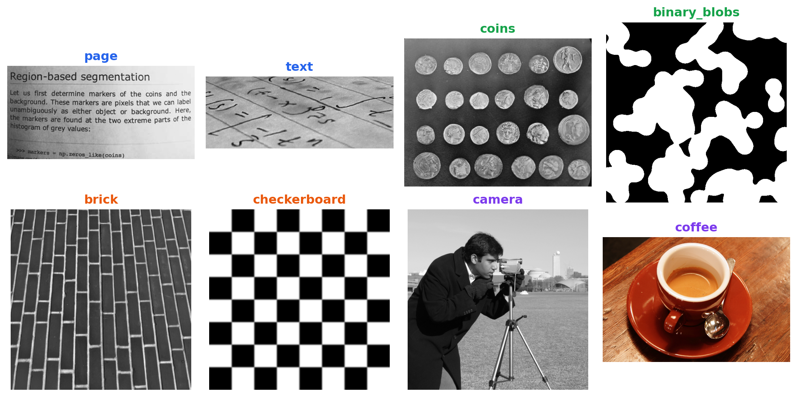
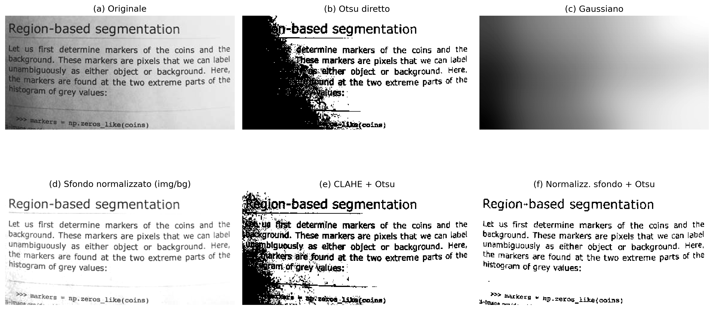
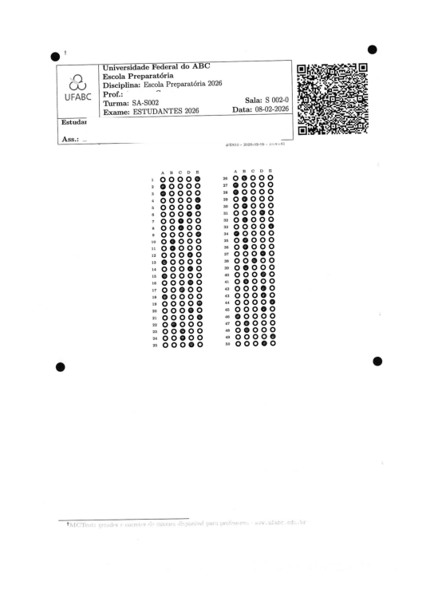
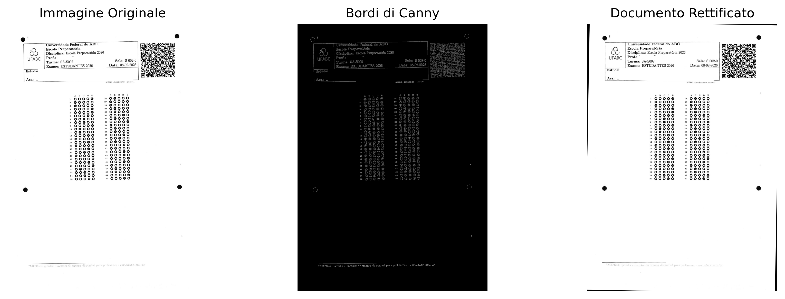
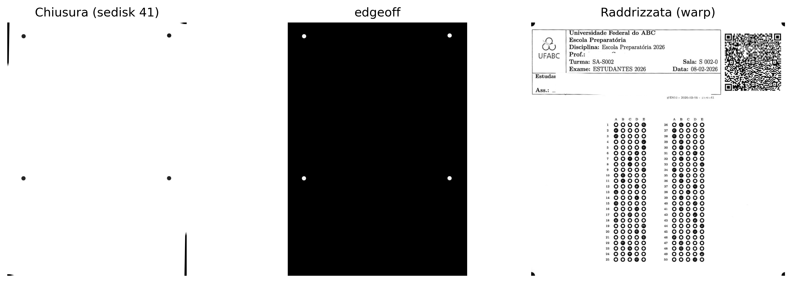
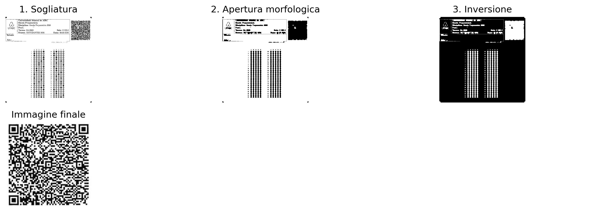
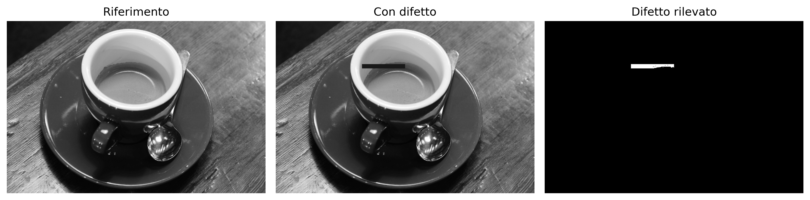

Nella Parte I — Elaborazione Digitale delle Immagini (EDI), sono state studiate tecniche per la trasformazione e il miglioramento delle immagini, come operazioni morfologiche, filtraggio spaziale, convoluzioni, sogliatura, segmentazione ed elaborazione nel dominio della frequenza.
La Parte II — Visione Artificiale (VA) amplia questo ambito trattando l’interpretazione automatica del contenuto visivo, coinvolgendo l’estrazione di informazioni, il riconoscimento di pattern e il processo decisionale basato su immagini.
Questo capitolo presenta tale transizione attraverso due applicazioni rappresentative:
Analisi Automatizzata dei Documenti, applicata all’elaborazione di moduli, valutazioni e altri documenti strutturati mediante sistemi di riconoscimento ottico dei marcatori (Optical Mark Recognition – OMR);
Ispezione Industriale Automatizzata, finalizzata al controllo qualità e alla rilevazione di difetti nelle linee di produzione.
Queste applicazioni integrano tecniche di rilevamento di strutture geometriche, estrazione di descrittori invarianti, riconoscimento di pattern e classificazione di oggetti, costituendo la base di numerosi sistemi moderni di ispezione visiva e automazione.
6.1 Obiettivi del Capitolo
Al termine di questo capitolo, lo studente dovrebbe essere in grado di:
Valutare l’influenza del pre-processing sulla qualità del riconoscimento automatico delle informazioni nei documenti;
Eseguire il riconoscimento ottico dei caratteri (OCR) per convertire documenti digitalizzati in testo codificato;
Applicare tecniche di elaborazione del linguaggio naturale, inclusa la traduzione automatica, al testo ottenuto tramite OCR;
Applicare tecniche di allineamento e rettifica geometrica dei documenti utilizzando la Trasformata di Hough e trasformazioni proiettive;
Implementare sistemi di riconoscimento ottico dei marcatori (OMR) per la lettura automatizzata di valutazioni e moduli;
Rilevare e segmentare regioni di interesse sulla base di operazioni morfologiche, contorni e proprietà geometriche;
Decodificare marcatori bidimensionali e codici a barre, integrando librerie di Visione Artificiale in pipeline di elaborazione documentale;
Sviluppare pipeline di Visione Artificiale per l’analisi automatizzata dei documenti.
Questo capitolo segna la transizione dall’Elaborazione Digitale delle Immagini, volta alla trasformazione delle immagini, alla Visione Artificiale, il cui obiettivo è interpretare il contenuto visivo, estrarre informazioni e supportare processi automatizzati di analisi e presa di decisione.
6.2 Configurazione dell’Ambiente
Gli esempi di questo capitolo utilizzano librerie ampiamente impiegate in PDI-VC. Il blocco seguente installa i pacchetti necessari; in ambienti che già li possiedono, l’esecuzione può essere ignorata.
import os, urllib.requesturl ="https://raw.githubusercontent.com/fzampirolli/pdi-vc/master/morph/config.py"ifnot os.path.exists("config.py"): urllib.request.urlretrieve(url, "config.py")import configconfig.setup()from morph import mm# installa più dipendenze oltre a morph.py per questo capitoloimport sys, subprocess, importlib, shutildef setup_cap06():"""Installa dipendenze di sistema e Python specifiche del Capitolo 6 (OCR, lettura PDF, codici a barre)."""# 1. Dipendenze di sistemaif'google.colab'in sys.modules:print("[AMBIENTE] Google Colab. Configurazione delle dipendenze di sistema...") subprocess.run("apt-get update && apt-get install -y poppler-utils ""libzbar0 tesseract-ocr tesseract-ocr-por", shell=True, stdout=subprocess.DEVNULL, stderr=subprocess.DEVNULL )elif shutil.which("tesseract") isNone:# Ambiente locale senza tesseract: tenta di installare tramite apt-get (richiede sudo/root)if shutil.which("apt-get"):print("[AMBIENTE] Locale. Installazione di tesseract-ocr tramite apt-get (potrebbe richiedere password)...") resultado = subprocess.run("sudo apt-get update && sudo apt-get install -y tesseract-ocr tesseract-ocr-por", shell=True )if resultado.returncode !=0or shutil.which("tesseract") isNone:print("[AVVISO] Impossibile installare automaticamente. ""Installare manualmente: sudo apt install tesseract-ocr tesseract-ocr-por" )else:print("[AVVISO] tesseract non trovato e apt-get non disponibile. ""Installare manualmente prima di eseguire le celle OCR." )# 2. Dipendenze Python (installa solo quelle mancanti) pkgs = {"cv2": "opencv-python", "skimage": "scikit-image", "numpy": "numpy","pdf2image": "pdf2image", "pandas": "pandas", "tabulate": "tabulate","PyPDF2": "PyPDF2", "bcrypt": "bcrypt", "pyarrow": "pyarrow","pyzbar": "pyzbar", "pytesseract": "pytesseract", "deep_translator": "deep-translator" }for mod, pkg in pkgs.items():if importlib.util.find_spec(mod) isNone: resultado_pip = subprocess.run([sys.executable, "-m", "pip", "install", "-q", pkg])if resultado_pip.returncode !=0:print(f"[AVVISO] Errore durante l'installazione di {pkg} (richiesto per il modulo {mod}).")setup_cap06()# 3. Import globali del pipelineimport cv2, numpy as np, matplotlib.pyplot as pltfrom skimage import io, data, color
Oltre a queste librerie, verrà utilizzato il modulo didattico morph.py, sviluppato per semplificare le operazioni di lettura, visualizzazione ed elaborazione delle immagini nel corso di questo libro. Il codice seguente ne verifica la disponibilità, effettua il download quando necessario e conferma la versione caricata.
Gli esempi presentati in questa parte del libro utilizzano, quando possibile, documenti digitalizzati, fogli di risposta, codici a barre, QRCodes e altre immagini provenienti da applicazioni reali. Per rendere gli esperimenti integralmente riproducibili — anche in ambienti senza accesso a Internet o ai file originali del MCTest —, vengono impiegate anche immagini pubbliche ampiamente utilizzate nell’insegnamento e nella ricerca in Elaborazione Digitale delle Immagini e Visione Artificiale (EDI-VA).
ConsiglioPerché utilizzare un database di immagini di benchmark?
Immagini come camera() e coins() sono impiegate da decenni in libri di testo, articoli scientifici e materiali didattici di EDI-VA. Il loro utilizzo offre importanti vantaggi:
Riproducibilità: qualsiasi lettore ottiene esattamente le stesse immagini, indipendentemente dal computer o dal sistema operativo utilizzato, senza necessità di download esterni o di file specifici di questo libro;
Comparabilità: i risultati prodotti possono essere confrontati direttamente con quelli riportati in letteratura, poiché gli stessi set di immagini sono ampiamente adottati come riferimento;
Focus sugli algoritmi: essendo immagini compatte, ben documentate e distribuite senza restrizioni d’uso per fini educativi e scientifici, consentono di concentrare l’attenzione sulle tecniche di elaborazione, riducendo interferenze legate all’acquisizione o alla gestione dei dati.
6.3.1 Immagini Pubbliche con skimage.data
Il modulo skimage.data mette a disposizione una collezione di immagini di riferimento ampiamente utilizzata in attività didattiche, di ricerca e di validazione di algoritmi in PDI-VC. L’ispezione dell’attributo data.__all__ mostra che la versione attuale raccoglie 42 elementi, incluse fotografie naturali, documenti digitalizzati, immagini mediche, microscopia, texture, pattern sintetici, modelli tridimensionali e sequenze temporali. È opportuno osservare che alcuni di questi elementi corrispondono a funzioni utilitarie, come data_dir() e download_all(), e non a immagini vere e proprie.
Poiché l’obiettivo di questo capitolo è presentare applicazioni di analisi documentale e ispezione visiva, la Tabella 6.2 riunisce una selezione rappresentativa delle immagini più rilevanti, organizzata in base alle loro principali applicazioni nella Visione Artificiale. La Figura 6.1 presenta un campione di queste immagini, raggruppate secondo la stessa classificazione adottata nella tabella.
NotaImmagini utilizzate in questo capitolo
Sebbene skimage.data metta a disposizione decine di immagini di riferimento, solo quattro vengono impiegate direttamente negli esperimenti di questo capitolo. Esse sono state selezionate perché riproducono, in modo controllato, caratteristiche frequentemente riscontrate in documenti digitalizzati e in sistemi di ispezione visiva industriale. La Tabella 6.1 riassume il ruolo di ciascuna di esse nel corso di questo capitolo.
Tabella 6.1: Immagini di skimage.data utilizzate negli esperimenti di questo capitolo.
Immagine
Applicazione nel capitolo
data.page()
Pagina digitalizzata utilizzata negli esperimenti di correzione dell’illuminazione, miglioramento locale (CLAHE) e sogliatura automatica di Otsu.
data.text()
Documento contenente testo stampato, impiegato per illustrare segmentazione, estrazione dei contorni e fasi tipiche di OCR e OMR.
data.coffee()
Fotografia a colori con variazioni naturali di illuminazione, utilizzata per esemplificare tecniche applicabili a scene reali non documentali.
data.brick()
Texture di riferimento impiegata in esempi di ispezione superficiale e rilevamento dei difetti tramite analisi della varianza locale.
Tabella 6.2: Selezione di immagini pubbliche rappresentative disponibili nel modulo skimage.data, organizzate per area di applicazione.
Categoria
Função
Descrição
📄 Documentos & OCR/OMR
data.page()
Página digitalizada de documento — normalização de fundo, CLAHE e Otsu.
📄 Documentos & OCR/OMR
data.text()
Texto impresso — segmentação e extração de contornos em cenários de OCR/OMR.
🔵 Segmentação, Morfologia & Contornos
data.coins()
Conjunto de moedas — referência clássica para segmentação e watershed.
🔵 Segmentação, Morfologia & Contornos
data.clock()
Relógio analógico — detecção de formas e contornos.
🔵 Segmentação, Morfologia & Contornos
data.binary_blobs()
Blobs binários sintéticos — conectividade e morfologia matemática.
🔵 Segmentação, Morfologia & Contornos
data.moon()
Superfície lunar — segmentação de crateras por relevo de intensidade.
🧵 Textura & Inspeção Industrial
data.brick()
Textura uniforme de tijolos — detecção de defeitos por variância local.
🧵 Textura & Inspeção Industrial
data.checkerboard()
Padrão xadrez — calibração de câmera e transformações geométricas.
🖼️ Fotografias Clássicas de PDI/VC
data.camera()
Fotógrafo com tripé — imagem de referência mais citada na literatura de PDI.
🖼️ Fotografias Clássicas de PDI/VC
data.astronaut()
Retrato colorido de astronauta — filtragem e realce em cor.
🖼️ Fotografias Clássicas de PDI/VC
data.coffee()
Xícara de café — cena real com variação de iluminação e cor.
🖼️ Fotografias Clássicas de PDI/VC
data.cat() / data.chelsea()
Fotografias coloridas de gatos — detecção de bordas e realce.
🖼️ Fotografias Clássicas de PDI/VC
data.horse()
Silhueta binária de cavalo — descritores de forma e contorno.
import matplotlib.pyplot as pltfrom skimage import data# Immagini ordinate per categoria; il colore del titolo riproduce il colore della categoria nella tab. precedenteimgs = [ ("page", data.page(), "#2563eb"), # Documenti & OCR/OMR ("text", data.text(), "#2563eb"), ("coins", data.coins(), "#16a34a"), # Segmentazione & morfologia ("binary_blobs", data.binary_blobs(), "#16a34a"), ("brick", data.brick(), "#ea580c"), # Texture & ispezione industriale ("checkerboard", data.checkerboard(),"#ea580c"), ("camera", data.camera(), "#7c3aed"), # Fotografie classiche di PDI/VC ("coffee", data.coffee(), "#7c3aed"),]fig, ax = plt.subplots(2, 4, figsize=(11, 5.5))for a, (nome, img, cor) inzip(ax.ravel(), imgs): a.imshow(img, cmap="gray") a.set_title(nome, color=cor, fontweight="bold") a.axis("off")plt.tight_layout()

Figura 6.1: Campione di immagini pubbliche da skimage.data, raggruppate per area di applicazione.
6.4 Normalizzazione dello Sfondo e Equalizzazione Locale del Contrasto
La qualità della segmentazione dipende direttamente dalle caratteristiche dell’immagine in ingresso. Nei documenti digitalizzati, variazioni di illuminazione, ombre, regioni sovraesposte e differenze di tonalità della carta riducono il contrasto tra primo piano e sfondo, rendendo difficile l’applicazione di metodi di sogliatura globale, come l’algoritmo di Otsu.
Per minimizzare questi effetti, vengono impiegate due tecniche complementari di pre-elaborazione:
Normalizzazione dello sfondo: stima la componente a bassa frequenza dell’immagine mediante una forte uniformazione e, successivamente, normalizza l’immagine originale rispetto a tale sfondo stimato. Questa procedura riduce i gradienti di illuminazione e compensa le variazioni lente di intensità, preservando le strutture di interesse.
CLAHE (Contrast Limited Adaptive Histogram Equalization), presentato nel Capitolo 4: suddivide l’immagine in piccole regioni (tiles) ed esegue l’equalizzazione dell’istogramma di ciascuna regione in modo indipendente. Il contrasto è limitato per evitare un’amplificazione eccessiva del rumore, rendendo la tecnica particolarmente adatta a immagini con variazioni locali di illuminazione.
La Figura 6.2 confronta queste strategie utilizzando l’immagine page() della libreria skimage.data. Vengono presentati sei risultati: (a) l’immagine originale; (b) la binarizzazione diretta con il metodo di Otsu, utilizzata come riferimento; (c) lo sfondo stimato tramite filtraggio Gaussiano; (d) l’immagine dopo la normalizzazione dello sfondo; (e) la binarizzazione ottenuta dopo l’applicazione della CLAHE seguita dal metodo di Otsu; e (f) la binarizzazione ottenuta dopo la normalizzazione dello sfondo seguita dall’applicazione del metodo di Otsu.
Il confronto consente di osservare l’effetto prodotto da ciascuna fase della pre-elaborazione e la sua influenza sulla qualità della segmentazione. In particolare, la normalizzazione dello sfondo riduce le variazioni globali di illuminazione, mentre la CLAHE aumenta il contrasto locale tra caratteri e sfondo. A seconda delle caratteristiche dell’immagine, l’una o l’altra strategia può produrre risultati superiori, non esistendo una tecnica universalmente più adeguata.
import cv2from skimage import datafrom morph import mmimg = data.page() # oppure: img = mm.gray(img_final) — con immagine del foglio di prova# ── Metodo 1: Normalizzazione dello sfondo + Otsu ────────────────────────────────# Stima lo sfondo con un filtro gaussiano di sigma grande (variazioni lente di luce)# e divide pixel per pixel per cancellare il gradiente di illuminazionebg = cv2.GaussianBlur(img, (0, 0), sigmaX=25)img_norm = cv2.divide(img, bg, scale=255)img_norm_otsu = mm.threshold(img_norm)# ── Metodo 2: CLAHE + Otsu ────────────────────────────────────────────────# tileGridSize definisce la dimensione di ciascuna regione locale (tile)# clipLimit controlla il limite di amplificazione — valori alti aumentano il contrasto# ma amplificano anche il rumoreclahe = cv2.createCLAHE(clipLimit=2.0, tileGridSize=(8, 8))img_clahe = clahe.apply(img)img_clahe_otsu = mm.threshold(img_clahe)# ── Metodo 0: Otsu diretto (senza pre-elaborazione) — riferimento ───────────img_otsu = mm.threshold(img)mm.show( [img, img_otsu, bg, img_norm, img_clahe_otsu, img_norm_otsu], titles=["(a) Originale", "(b) Otsu diretto", "(c) Gaussiano", \"(d) Sfondo normalizzato (img/bg)", "(e) CLAHE + Otsu", \"(f) Normalizz. sfondo + Otsu"], cols=3, figsize=(14, 8))

Figura 6.2: Confronto tra strategie di pre-elaborazione per la binarizzazione dell’immagine testuale: (a) immagine originale; (b) sogliatura diretta con il metodo di Otsu; (c) sfondo stimato mediante filtro gaussiano; (d) immagine dopo normalizzazione dello sfondo (divisione per l’immagine smussata); (e) CLAHE seguito da sogliatura di Otsu; e (f) normalizzazione dello sfondo seguita da sogliatura di Otsu. Le immagini illustrano l’effetto di ciascuna tecnica sulla compensazione delle variazioni di illuminazione e sulla qualità della segmentazione.
Nota🧠 Perché funziona? — Normalizzazione dello sfondo vs. CLAHE
Normalizzazione dello sfondo: dividendo l’immagine per una versione fortemente attenuata di se stessa, si eliminano le variazioni lente di luminosità (gradiente di luce, ombra dei bordi) senza influire sui dettagli fini — testo, linee, bolle. Il risultato è un’immagine con illuminazione approssimativamente uniforme, dove la soglia globale di Otsu funziona correttamente su tutta la pagina.
CLAHE: un istogramma globale equalizzato “stira” i toni dell’intera immagine in una volta — utile quando l’illuminazione è uniforme, ma problematico quando non lo è. Il CLAHE divide l’immagine in piccoli blocchi (tiles) e equalizza ciascuno separatamente, con un limite massimo di amplificazione (clipLimit) per non amplificare il rumore. È particolarmente efficace per valorizzare regioni localmente sottoesposte, ma non elimina i gradienti globali — pertanto, applicarlo dopo la normalizzazione dello sfondo tende a produrre risultati più coerenti.
6.5 Riconoscimento Ottico dei Caratteri (OCR)
Dopo la binarizzazione, la fase successiva dell’elaborazione documentale consiste nella conversione della rappresentazione visiva dei caratteri in testo codificato digitalmente, processo denominato Riconoscimento Ottico dei Caratteri (Optical Character Recognition — OCR).
In generale, un sistema OCR comprende tre fasi:
Segmentazione: identifica righe, parole e caratteri nell’immagine, utilizzando proiezioni orizzontali e verticali o la rilevazione di componenti connessi.
Estrazione delle caratteristiche: rappresenta ciascun carattere mediante attributi visivi, come bordi, curvature e pattern del tratto.
Riconoscimento: associa gli attributi estratti al carattere più probabile. I sistemi attuali utilizzano prevalentemente reti neurali ricorrenti (LSTM) o architetture basate su transformer.
In questo libro si utilizza il Tesseract OCR, accessibile tramite la libreria pytesseract (installazione: pip install pytesseract). Sviluppato originariamente da Hewlett-Packard tra il 1985 e il 1995 e attualmente mantenuto da Google, Tesseract è descritto in Smith (2007) e Smith (2013). Nelle versioni recenti, il riconoscimento testuale è realizzato da reti neurali LSTM.
Le prestazioni dell’OCR dipendono dalla qualità dell’immagine di input. Rumore, basso contrasto, distorsioni geometriche e illuminazione irregolare riducono il tasso di riconoscimento. Per questo motivo, fasi come la rettificazione, la normalizzazione dello sfondo e l’equalizzazione adattiva (CLAHE) integrano la pre-elaborazione dell’immagine.
Nota🧠 Tesseract necessita di un’immagine binarizzata?
Tesseract incorpora internamente una fase di binarizzazione adattiva prima del riconoscimento dei caratteri. Per questo motivo, fornire all’OCR un’immagine precedentemente binarizzata non sempre produce i migliori risultati.
Poiché la sogliatura è un’operazione irreversibile, può eliminare variazioni sottili di intensità sui bordi dei caratteri, come l’antialiasing, che possono agevolare il meccanismo di riconoscimento. In molti casi, un’immagine in scala di grigi, con buona illuminazione e contrasto, produce una trascrizione più fedele rispetto alla sua versione binarizzata.
Per indagare questo effetto, si confronta il testo estratto da Tesseract a partire da quattro versioni della stessa immagine, presentate nella Figura 6.3: (a) immagine originale; (b) immagine sottoposta a equalizzazione adattiva (CLAHE) seguita dalla sogliatura con il metodo di Otsu; (c) immagine sottoposta a normalizzazione dello sfondo seguita dalla sogliatura con il metodo di Otsu; e (d) immagine sottoposta solo alla normalizzazione dello sfondo, preservando i toni di grigio.
Il confronto tra le versioni (c) e (d) mostra che, in tratti contenenti caratteri visivamente simili, la versione in scala di grigi (d) ha prodotto una trascrizione più fedele al testo originale rispetto alla versione binarizzata (c). Questo risultato indica che la sogliatura applicata nella pre-elaborazione può eliminare informazioni utili al riconoscimento. Pertanto, sebbene la binarizzazione sia essenziale per diverse operazioni di elaborazione delle immagini, essa non costituisce necessariamente il miglior input per l’OCR. La scelta della tecnica di pre-elaborazione deve considerare la fase successiva del pipeline documentale.
import pytesseractimport shutil as _shif _sh.which("tesseract") isNone:# Ambiente di build senza Tesseract installato (es.: senza apt/sudo):# degrada invece di rompere il render. Su Colab/locale con Tesseract,# nulla cambia. _AVISO_OCR ="[Tesseract OCR indisponivel neste ambiente - texto omitido]" pytesseract.image_to_string =lambda*a, **k: _AVISO_OCRfrom skimage import dataimport cv2from morph import mmimg = data.page()# ── Riutilizzando i risultati della sezione precedente ────────────────────────img_otsu = mm.threshold(img)bg = cv2.GaussianBlur(img, (0, 0), sigmaX=25)img_norm = cv2.divide(img, bg, scale=255) # scala di grigi, senza Otsuimg_norm_otsu = mm.threshold(img_norm) # binarizzataclahe = cv2.createCLAHE(clipLimit=2.0, tileGridSize=(8, 8))img_clahe = clahe.apply(img)img_clahe_otsu = mm.threshold(img_clahe)# ── Configurazione di Tesseract ──────────────────────────────────────────────# --psm 6: assume un singolo blocco uniforme di testo (adatto all'immagine `page`)config ="--psm 6"texto_original = pytesseract.image_to_string(img, config=config)texto_clahe_otsu = pytesseract.image_to_string(img_clahe_otsu, config=config)texto_norm_otsu = pytesseract.image_to_string(img_norm_otsu, config=config)texto_norm_gray = pytesseract.image_to_string(img_norm, config=config)for nome, texto inzip( ["(a) Original", "(b) CLAHE + Otsu", "(c) Normaliz. fundo + Otsu", "(d) Normaliz. fundo (tons de cinza)"], [texto_original, texto_clahe_otsu, texto_norm_otsu, texto_norm_gray]):print(f"--- {nome} ---")print(texto.strip(), "\n")mm.show( [img, img_clahe_otsu, img_norm_otsu, img_norm], titles=["(a) Originale", "(b) CLAHE + Otsu", "(c) Normaliz. sfondo + Otsu", "(d) Normaliz. sfondo (grigi)"], cols=4, figsize=(16, 4))
Figura 6.3: Confronto del testo estratto da Tesseract da quattro versioni della stessa immagine: (a) immagine originale; (b) CLAHE seguito da sogliatura di Otsu; (c) normalizzazione dello sfondo seguita da sogliatura di Otsu; e (d) normalizzazione dello sfondo in scala di grigi, senza sogliatura. Il confronto evidenzia che la binarizzazione esterna non sempre favorisce il riconoscimento, poiché Tesseract esegue già internamente la propria binarizzazione adattiva.
Nota🧠 Perché il pre-processing migliora l’OCR?
Le prestazioni dell’OCR dipendono direttamente dalla qualità dell’immagine in ingresso. Basso contrasto, illuminazione non uniforme, rumore e distorsioni geometriche rendono difficile la separazione tra testo e sfondo e aumentano la probabilità di errori di riconoscimento.
Tecniche come la normalizzazione dello sfondo e l’equalizzazione adattiva (CLAHE) correggono i gradienti di illuminazione e migliorano il contrasto locale tra i caratteri e lo sfondo, producendo immagini più adatte al riconoscimento automatico. La sogliatura, a sua volta, deve essere applicata con cautela: essendo un’operazione irreversibile, può eliminare variazioni sottili di intensità sui bordi dei caratteri — come l’antialiasing — che il motore OCR stesso utilizza internamente per risolvere ambiguità tra simboli visivamente simili. Per questo motivo, le immagini in scala di grigi, corrette solo per quanto riguarda l’illuminazione, spesso producono trascrizioni più fedeli rispetto alle loro versioni binarizzate.
Nei documenti catturati da fotocamere di dispositivi mobili, il pre-processing tende a fornire un maggiore guadagno prestazionale rispetto ai documenti digitalizzati tramite scanner, nei quali l’illuminazione è solitamente più uniforme.
6.6 Traduzione Automatica del Testo Riconosciuto
Dopo il riconoscimento ottico dei caratteri, il testo ottenuto può essere sottoposto a tecniche di elaborazione del linguaggio naturale, come correzione ortografica, indicizzazione, sintesi e traduzione automatica.
La traduzione automatica costituisce una fase indipendente dall’OCR. Mentre l’OCR converte i caratteri presenti nell’immagine in testo codificato, la traduzione opera su tale testo nella lingua originale del documento. In questo modo, errori di riconoscimento possono essere propagati alla traduzione, compromettendo la qualità del risultato. I sistemi attuali di traduzione automatica utilizzano prevalentemente architetture neurali basate su meccanismi di attenzione e transformers [Bahdanau; Cho; Bengio (2015); Vaswani (2017)].
In questo esempio, si utilizza il testo ottenuto dall’immagine sottoposta unicamente alla normalizzazione dello sfondo, senza sogliatura (punto d della Figura 6.3), poiché presenta la trascrizione più fedele tra le strategie valutate nella sezione precedente.
La traduzione viene eseguita tramite la libreria deep-translator (installazione: pip install deep-translator), che fornisce un’interfaccia per diversi servizi di traduzione automatica, incluso Google Translate.
from deep_translator import GoogleTranslatorimport shutil as _sh# Testo ottenuto dall'OCR dall'immagine con normalizzazione dello sfondo (toni di grigio)texto_en = texto_norm_grayif _sh.which("tesseract") isNone:# Ambiente di build senza Tesseract installato (vedi cella precedente): testo_en# è già il segnaposto per OCR non disponibile, non testo reale — saltare la traduzione# invece di fallire tentando di tradurre una stringa che non è realmente inglese. texto_pt ="[Tradução indisponível neste ambiente - Tesseract OCR ausente]"else: texto_pt = GoogleTranslator(source="en", target="pt").translate(texto_en)print("--- Testo originale generato dall'immagine normalizzata in toni di grigio (OCR, EN) ---")print(texto_en)print("\n--- Testo tradotto (PT-BR) ---")print(texto_pt)mm.show( [img_norm], titles=["Immagine con normalizzazione dello sfondo (toni di grigio)"], cols=1, figsize=(6, 4))
Figura 6.4: Flusso di riconoscimento e traduzione automatica. L’immagine preprocessata tramite normalizzazione dello sfondo, senza sogliatura, viene utilizzata come input per Tesseract OCR, e il testo riconosciuto viene tradotto dall’inglese al portoghese tramite la libreria deep-translator.
Nota🧠 Perché la qualità dell’OCR influenza la traduzione?
La traduzione automatica utilizza come input il testo prodotto dall’OCR. Gli errori di riconoscimento, come caratteri errati, parole incomplete o frammentate, si propagano alla fase di traduzione e possono alterare il significato del testo.
Di conseguenza, la qualità della traduzione dipende direttamente dalla fedeltà della trascrizione ottenuta tramite OCR. Come discusso in precedenza, tale fedeltà non è sempre massimizzata da una binarizzazione esterna: le immagini in scala di grigi, corrette solo per quanto riguarda l’illuminazione, possono preservare informazioni rilevanti per la distinzione tra caratteri visivamente simili. Pertanto, la preelaborazione dell’immagine — e la scelta adeguata delle sue fasi in funzione del compito successivo — contribuisce a migliorare non solo il riconoscimento dei caratteri, ma anche le prestazioni delle fasi successive di elaborazione del linguaggio naturale, come traduzione, indicizzazione e riassunzione.
6.7 Fondamenti di OMR e Ispezione Industriale
Il Riconoscimento Ottico dei Segni (Optical Mark Recognition — OMR) è una tecnica di Visione Artificiale finalizzata all’identificazione automatica di marcature in posizioni predefinite di un modulo. Le sue applicazioni includono fogli di risposta, questionari, moduli amministrativi e altri documenti strutturati.
A differenza dell’OCR (Optical Character Recognition), che riconosce caratteri e parole, l’OMR determina la presenza, l’assenza o l’intensità delle marcature in regioni preventivamente note. Invece di interpretare il testo, sfrutta proprietà geometriche e statistiche associate alla compilazione di tali regioni.
I moderni sistemi OMR elaborano immagini acquisite tramite scanner, fotocamere o dispositivi mobili, automatizzando attività che in precedenza dipendevano da apparecchiature specializzate.
In generale, un sistema OMR comprende le seguenti fasi:
Acquisizione: conversione del documento fisico in formato digitale;
Pre-elaborazione: correzione geometrica, riduzione del rumore e binarizzazione;
Localizzazione delle regioni di interesse: identificazione delle aree destinate alle marcature;
Analisi delle marcature: valutazione della compilazione delle regioni candidate;
Interpretazione: conversione delle marcature in risposte o dati strutturati.
Questi principi si estendono naturalmente all’Ispezione Industriale Automatizzata. Nelle linee di produzione, la stessa sequenza — acquisizione, pre-elaborazione, segmentazione, estrazione delle caratteristiche e decisione — viene impiegata per rilevare difetti superficiali, verificare l’integrità dei componenti e misurare dimensioni con precisione subpixel. La differenza risiede nel dominio di applicazione: mentre l’OMR opera su documenti con struttura predefinita, l’ispezione industriale tratta oggetti le cui variazioni geometriche e radiometriche devono essere modellate in modo più flessibile.
Nelle sezioni successive, entrambe le applicazioni vengono sviluppate tramite progetti pratici che riproducono fasi tipiche dei sistemi reali.
6.8 Progetti Pratici: Costruzione di una Pipeline di Analisi Documentale
I concetti di questo capitolo verranno sviluppati attraverso progetti che riproducono fasi tipiche dei sistemi reali di analisi documentale, introducendo tecniche riutilizzabili in applicazioni di OCR, OMR, ispezione visiva ed elaborazione di moduli.
6.8.1 Allineamento Automatico dei Documenti (OCR/OMR Pre-processing)
La correzione dell’inclinazione (deskew) è una fase fondamentale nell’elaborazione dei documenti. Le rotazioni introdotte durante la digitalizzazione o l’acquisizione compromettono la localizzazione delle regioni di interesse e riducono la precisione delle fasi successive.
In questo progetto verrà sviluppato un sistema per stimare automaticamente l’orientamento predominante del documento e correggerne l’inclinazione. A tale scopo, verranno impiegate tecniche classiche di rilevamento dei bordi con l’operatore di Canny e il rilevamento delle linee tramite la Trasformata di Hough. A partire dalle linee identificate, verrà stimato l’angolo di rotazione e applicata una trasformazione affine per produrre una versione allineata del documento.
Poiché moduli e fogli di risposta sono spesso distribuiti in formato PDF, la pipeline inizia con la rasterizzazione di ciascuna pagina, convertendola in un’immagine matriciale. In questo capitolo, tale fase verrà realizzata con la libreria pdf2image, generando immagini PNG con risoluzione di 300 DPI (dots per inch). A partire da queste, potranno essere applicate le tecniche di rilevamento dei bordi, Trasformata di Hough, segmentazione, estrazione dei contorni e riconoscimento automatico dei pattern studiate lungo il capitolo.
import osimport urllib.requestfrom pdf2image import convert_from_pathfrom skimage import dataimport cv2# Directory dei microdati e dei fogli di risposta dell'esame istituzionalefile_path ="dados/provas_qrcode_EP.pdf"url_github = ("https://raw.githubusercontent.com/fzampirolli/""pdi-vc/master/all/cap06/dados/provas_qrcode_EP.pdf")# Se il file non esiste localmente, lo scarica automaticamente da GitHubifnot os.path.exists(file_path):print(f"[DOWNLOAD] Download del PDF da GitHub: {url_github}")try:# Garantisce che la cartella 'dati' esista prima di salvare os.makedirs(os.path.dirname(file_path), exist_ok=True) urllib.request.urlretrieve(url_github, file_path)print("[DOWNLOAD] PDF scaricato con successo!")exceptExceptionas e:print(f"[DOWNLOAD] Errore durante il download del file: {e}")print(f"PDF di fogli di prova digitalizzati: {file_path}")if os.path.exists(file_path):# Rasterizzazione delle pagine con risoluzione ottimizzata di 300 DPI pages = convert_from_path(file_path, dpi=300)for i, page inenumerate(pages): saida =f"test{i+1:02d}.png" page.save(saida)print(f"[INGESTIONE] Pagina PDF convertita con successo: {saida}")else:print("[AVVISO] File PDF non trovato nel path. Attivazione del fallback tramite skimage.data.")# Inietta una matrice di testo pubblica per garantire l'esecuzione continua del pipeline img_fallback = data.text() cv2.imwrite("test02.png", img_fallback)print("[INGESTIONE] Immagine di fallback strutturata: test02.png")# Carica e visualizza l'immagine rasterizzata iniziale utilizzando l'ecosistema morphif os.path.exists('test02.png'): img_original = mm.read('test02.png')else:# Fallback definitivo nel caso in cui anche skimage fallisca img_original = np.ones((400, 400), dtype=np.uint8) *255mm.show(img_original, figsize=(4, 3))
[DOWNLOAD] Download del PDF da GitHub: https://raw.githubusercontent.com/fzampirolli/pdi-vc/master/all/cap06/dados/provas_qrcode_EP.pdf
[DOWNLOAD] PDF scaricato con successo!
PDF di fogli di prova digitalizzati: dados/provas_qrcode_EP.pdf
[INGESTIONE] Pagina PDF convertita con successo: test01.png
[INGESTIONE] Pagina PDF convertita con successo: test02.png
[INGESTIONE] Pagina PDF convertita con successo: test03.png

Figura 6.5: Pipeline di ingestione dei documenti: rasterizzazione adattiva delle pagine PDF in matrici discrete in formato PNG, visualizzando la seconda pagina.
6.8.2 Algoritmo di Rettifica dell’Inclinazione (Deskew)
La fase di deskew ha l’obiettivo di stimare e correggere l’inclinazione globale di un documento digitalizzato, allineando il suo contenuto agli assi dell’immagine. La Figura 6.7 presenta il flusso completo di elaborazione, dall’immagine originale al risultato dopo la correzione geometrica. In modo complementare, il simulatore della Figura 6.6 consente di visualizzare il funzionamento della Trasformata di Hough e di comprendere come viene stimata l’orientazione predominante.
La procedura è composta da tre fasi principali:
rilevamento dei bordi tramite l’operatore di Canny;
stima dell’orientazione predominante mediante la Trasformata di Hough Lineare;
correzione dell’inclinazione utilizzando una trasformazione affine di rotazione.
Dopo la rettifica, il documento presenta un’orientazione approssimativamente orizzontale, favorendo le fasi successive di segmentazione, etichettatura dei componenti connessi e riconoscimento di caratteri e marcatori.
6.8.3 Modellazione Matematica
Le sottosezioni seguenti formalizzano, in termini matematici, le fasi descritte in precedenza, mettendo in relazione il gradiente dell’immagine, la parametrizzazione delle rette nello spazio di Hough e la matrice di rotazione impiegata nella correzione geometrica.
6.8.3.1 Rilevamento dei Bordi
Inizialmente, l’immagine viene smussata tramite un filtro gaussiano, riducendo l’effetto dei rumori ad alta frequenza che possono generare bordi spuri. I concetti di filtraggio spaziale e convoluzione sono stati presentati nel Capitolo 3.
Successivamente, l’operatore di Canny stima il gradiente dell’immagine. Sia \(f(x,y)\) l’intensità dell’immagine e \(\alpha\) l’angolo di rotazione.
\(f(x,y)\) rappresenta l’intensità dell’immagine nella posizione \((x,y)\);
\(\frac{\partial f}{\partial x}\) e \(\frac{\partial f}{\partial y}\) sono le derivate parziali nelle direzioni orizzontale e verticale;
\(|\nabla f(x,y)|\) è la magnitudine del gradiente.
Dopo il calcolo del gradiente, l’algoritmo applica la soppressione dei non massimi (non-maximum suppression) e la sogliatura per isteresi, producendo un’immagine binaria contenente i principali bordi del documento.
6.8.3.2 Trasformata di Hough
L’immagine binaria dei bordi viene elaborata mediante la Trasformata di Hough Lineare, il cui scopo è rilevare strutture approssimativamente rettilinee. Invece della rappresentazione cartesiana della retta, \(y=ax+b\), si utilizza la rappresentazione in forma normale,
\[
\rho = x\cos\theta + y\sin\theta,
\]
dove:
\(x\) e \(y\) sono le coordinate di un punto appartenente alla retta;
\(\rho\) è la distanza perpendicolare tra la retta e l’origine del sistema di coordinate dell’immagine;
\(\theta\) è l’angolo formato tra la normale alla retta e l’asse orizzontale dell’immagine.
In questa rappresentazione, ciascun punto di bordo \((x,y)\) genera una curva nello spazio dei parametri \((\rho,\theta)\). L’intersezione delle curve prodotte da punti appartenenti alla stessa retta dà origine a massimi in una matrice bidimensionale denominata accumulatore. Pertanto, i picchi dell’accumulatore corrispondono alle rette predominanti dell’immagine, come bordi del documento, linee di moduli o righe di testo.
Per stimare l’inclinazione globale del documento, si considerano soltanto le rette i cui angoli soddisfano
\[
-45^\circ \leq \theta \leq 45^\circ.
\]
Questa restrizione elimina orientamenti incompatibili con la disposizione prevista del documento e riduce l’influenza di rette verticali o di strutture irrilevanti. Sia \(\theta_1,\theta_2,\ldots,\theta_n\) l’insieme degli angoli delle rette selezionate. La stima dell’inclinazione globale si ottiene mediante la mediana,
\(\theta_i\) è l’angolo della \(i\)-esima retta rilevata dalla Trasformata di Hough;
\(n\) è il numero di rette considerate dopo il filtraggio angolare;
\(\hat{\theta}\) è la stima dell’inclinazione globale del documento.
La mediana viene adottata perché è meno sensibile alla presenza di rilevazioni isolate (outliers) rispetto alla media aritmetica, producendo una stima più stabile dell’orientamento predominante.
6.8.3.3 Rotazione Affine
Sia \(\hat{\theta}\) l’inclinazione stimata nella fase precedente. La correzione geometrica consiste nell’applicare una trasformazione affine di rotazione attorno al centro dell’immagine, affinché l’orientamento predominante coincida con l’asse orizzontale. Le trasformazioni affini sono state studiate nel Capitolo 2, insieme alle operazioni di traslazione, scala, taglio e rotazione.
Sia \((x,y)\) la posizione di un pixel rispetto al centro dell’immagine e \((x',y')\) la sua posizione dopo la rotazione. La trasformazione è descritta da \[
\begin{bmatrix}
x'\\
y'
\end{bmatrix} =
R(\alpha)
\begin{bmatrix}
x\\
y
\end{bmatrix},
\]
\((x,y)\) le coordinate originali del pixel rispetto al centro dell’immagine;
\((x',y')\) le coordinate del pixel dopo la rotazione;
\(\alpha\) l’angolo di rotazione applicato per compensare l’inclinazione stimata del documento;
\(R(\alpha)\) la matrice di rotazione.
In pratica, l’angolo applicato corrisponde all’opposto dell’inclinazione stimata,
\[
\alpha = -\hat{\theta},
\]
dove \(\hat{\theta}\) rappresenta l’orientamento predominante ottenuto tramite la Trasformata di Hough.
Poiché le coordinate trasformate non coincidono sempre con posizioni intere della griglia di pixel, è necessario ricampionare l’immagine per determinare i nuovi valori di intensità. Nell’implementazione presentata in questo capitolo, la funzione mm.rotate esegue tale operazione utilizzando l’interpolazione bicubica, riducendo gli artefatti di ricampionamento e preservando la continuità visiva di bordi e caratteri.
Canny: Rileva i bordi dei segmenti di testo — pixel ad alto gradiente che formano i contorni delle linee.
2
Hough: Ogni pixel di bordo vota per le rette associate. La mediana degli angoli delle rette con più voti stima l'inclinazione globale.
3
Rotazione Inversa: Applica una trasformazione affine con l'angolo opposto stimato, riorientando il documento in orizzontale.
–
Figura 6.6: Simulatore interattivo di correzione dell’inclinazione (deskew): sposta il cursore per inclinare il documento e osserva le tre fasi del pipeline — immagine inclinata, bordi Canny e risultato corretto.
def retificar_inclinacao_documento(img): gray = mm.gray(img) if img.ndim ==3else img edges = cv2.Canny(cv2.GaussianBlur(gray, (5,5), 0), 50, 150) lines = cv2.HoughLines(edges, 1, np.pi/180, 200)if lines isNone:return edges, img angulos = []for line in lines: angulo = np.rad2deg(line[0][1]) -90if-45< angulo <45: angulos.append(angulo)ifnot angulos:return edges, imgreturn edges, mm.rotate(img, np.median(angulos), interp="bicubic")# Esecuzione del pipeline di deskewimg_edges, img_final = retificar_inclinacao_documento(img_original)# Visualizzazione multipla standardizzata con il formato nativo del libromm.show( [img_original, img_edges, img_final], titles=["Immagine Originale", "Bordi di Canny", "Documento Rettificato"], cols=3, figsize=(12, 4))

Figura 6.7: Pipeline di raddrizzamento assiale: visualizzazione comparativa tra l’input ruotato originale, la mappa dei gradienti strutturali di Canny e il risultato finale allineato con sfondo normalizzato in bianco.
Nota🧠 Perché funziona? — Trasformata di Hough
Nella Trasformata di Hough, ogni pixel di bordo contribuisce con voti a tutte le rette che possono passare per la sua posizione. Invece di selezionare solo la retta con il maggior numero di voti, l’algoritmo considera tutte le rette la cui quantità di voti supera una soglia minima e calcola i rispettivi angoli. L’inclinazione globale del documento viene quindi stimata dalla mediana di questi angoli, una misura robusta rispetto ai valori anomali. Così, rette spurie prodotte da ombre, rumori o altri elementi dell’immagine esercitano poca influenza sulla stima finale, purché la maggior parte delle rette rilevate corrisponda ai bordi del documento.
6.8.4 Limitazioni Pratiche
Sebbene presenti buone prestazioni in condizioni abituali di digitalizzazione, il metodo dipende dall’esistenza di strutture lineari sufficientemente definite da essere rilevate dalla Trasformata di Hough, come i bordi della pagina, le linee dei moduli o le righe di testo. La sua precisione può ridursi in immagini a bassa risoluzione, con rumore eccessivo, ombre intense o inclinazioni marcate. In generale, documenti digitalizzati con una risoluzione vicina a 300 DPI e illuminazione omogenea forniscono risultati adeguati per applicazioni di OCR e OMR.
L’implementazione presentata in questo capitolo ha finalità didattica, illustrando i principi della correzione automatica dell’inclinazione mediante il rilevamento dei bordi, la Trasformata di Hough e la rotazione affine. Poiché utilizza esclusivamente l’orientamento delle strutture lineari predominanti, il metodo può essere applicato a diversi tipi di documenti, senza dipendere da marcatori specifici.
Nei sistemi reali di analisi documentale, tuttavia, l’allineamento utilizza solitamente marcatori geometrici precedentemente noti. Nel modello di foglio di risposta impiegato dall’ecosistema MCTest, ad esempio, vengono utilizzati quattro dischi neri di riferimento, oltre alle regioni corrispondenti all’intestazione, al QRCode e ai riquadri delle risposte. La localizzazione di questi elementi consente di stimare simultaneamente rotazione, scala e traslazione del foglio, rendendo la registrazione meno sensibile alla quantità di testo, all’assenza di linee strutturali e alle variazioni di stampa o digitalizzazione.
Per questo motivo, l’approccio basato sulla Trasformata di Hough viene utilizzato in questo capitolo per introdurre i fondamenti del problema, mentre le fasi successive adottano l’allineamento tramite marcatori geometrici, strategia predominante nei sistemi di OMR e analisi documentale.
6.8.5 Rilevamento di Bordi e Contorni
La localizzazione precisa delle regioni di interesse è una fase essenziale nei sistemi OMR. Nel modello di foglio delle risposte utilizzato in questo capitolo, l’intestazione e il riquadro delle risposte sono contenuti in un rettangolo virtuale delimitato da quattro dischi neri posizionati agli angoli. L’identificazione di questi marcatori consente di localizzare la regione di interesse e correggere le distorsioni geometriche introdotte durante l’acquisizione dell’immagine.
La procedura è composta da cinque fasi. Inizialmente, si applica una chiusura morfologica (dilatazione seguita da erosione), operazione studiata nel Capitolo 4, utilizzando un elemento strutturante a disco (mm.sedisk(33)). Questa operazione riduce piccole discontinuità e preserva i dischi di riferimento, rendendoli più omogenei. Successivamente, l’immagine viene invertita (mm.neg), così che i dischi costituiscano componenti chiare su sfondo scuro.
Nella fase successiva, si applica l’operazione mm.edgeoff (Capitolo 4), che rimuove i componenti connessi ai bordi dell’immagine, eliminando artefatti come ombre di scansione, segni di taglio e altri oggetti spuri ai margini. I componenti rimanenti vengono quindi analizzati tramite i loro contorni e filtrati in base a proprietà geometriche, come area e circolarità, per identificare i dischi candidati. L’implementazione di MCTest rende questo processo più robusto selezionando, tra tutti i candidati, i quattro i cui centri formano un rettangolo con larghezza compatibile con quella dell’immagine, riducendo l’occorrenza di falsi positivi.
Infine, i centri dei quattro dischi vengono ordinati spazialmente (in alto a sinistra, in alto a destra, in basso a sinistra e in basso a destra) e utilizzati come punti di controllo in una trasformazione prospettica (perspective warp). Questa trasformazione raddrizza l’immagine, producendo una rappresentazione allineata e con dimensioni note, adatta alle fasi successive di segmentazione e riconoscimento.
Le principali fasi di questo pipeline, dal processamento morfologico all’immagine rettificata, sono illustrate di seguito.
import cv2import numpy as npfrom morph import mm# img: immagine in scala di grigi del foglio di provaif img_final.ndim ==2: img = img_finalelse: img = mm.gray(img_final)# 1. Chiusura morfologica: preserva i dischi scuri, rimuovendo tutto ciò che è più piccolo del discoimg_close = mm.close(img, mm.sedisk(41))# 2. Inversione: i dischi scuri diventano componenti chiari su fondo scuroimg_neg = mm.neg(img_close)# 3. Rimuove i componenti collegati che toccano il bordo dell'immagineimg_edgeoff = mm.edgeoff(img_neg)# 4. Estrazione dei contorni esternicontornos, _ = cv2.findContours(img_edgeoff, cv2.RETR_EXTERNAL, cv2.CHAIN_APPROX_SIMPLE)# 5. Filtraggio per area e circolarità, mantenendo solo i 4 dischicentros = []for c in contornos: area = cv2.contourArea(c) perimetro = cv2.arcLength(c, True)if area <50or perimetro ==0:continue circularidade =4* np.pi * area / (perimetro **2)if circularidade >0.8: M = cv2.moments(c) cx, cy = M["m10"] / M["m00"], M["m01"] / M["m00"] centros.append((cx, cy))# Verifica robusta: interrompe il pipeline con messaggio chiaro invece di AssertionErroriflen(centros) !=4:print(f"[AVVISO] Previsti 4 dischi marcatori, trovati {len(centros)}.")print(" Verifica se l'immagine è un foglio di risposte MCTest valido")print(" oppure regola i parametri di circolarità e area minima.") img_retificada = img # fallback: preserva l'immagine senza raddrizzamentoelse:# 6. Ordinamento dei centri: in alto a sinistra, in alto a destra,# in basso a sinistra, in basso a destra pts = np.array(centros, dtype=np.float32) soma = pts.sum(axis=1) diff = pts[:, 0] - pts[:, 1] tl = pts[np.argmin(soma)] br = pts[np.argmax(soma)] tr = pts[np.argmax(diff)] bl = pts[np.argmin(diff)] pts_ordenados = np.array([tl, tr, bl, br], dtype=np.float32)# 7. Raddrizzamento tramite trasformazione prospettica (warp) largura, altura =800, 800 destino = np.array( [[0, 0], [largura, 0], [0, altura], [largura, altura]], dtype=np.float32 ) M_persp = cv2.getPerspectiveTransform(pts_ordenados, destino) img_retificada = cv2.warpPerspective(img, M_persp, (largura, altura)) mm.show( [img_close, img_edgeoff, img_retificada], titles=["Chiusura (sedisk 41)", "edgeoff", "Raddrizzata (warp)"], cols=3, figsize=(12, 4) )mm.write(img_retificada, "img_beetween_disks.png")

Figura 6.8: Rilevamento dei dischi marcatori, estrazione dei contorni e raddrizzamento tramite trasformazione prospettica.
Nota🧠 Perché funziona? — Dalla chiusura morfologica alla rettifica
Chiusura morfologica: la dilatazione seguita dall’erosione riempie piccole discontinuità e leviga i contorni degli oggetti senza alterare significativamente la loro forma complessiva. Utilizzando un elemento strutturante grande (sedisk(41)), i dettagli fini, come testi, linee del modulo e piccoli rumori, tendono a essere incorporati nello sfondo durante l’elaborazione, mentre oggetti di scala più ampia, come i dischi di riferimento, rimangono preservati e diventano più omogenei.
Circolarità: dopo l’isolamento dei componenti candidati, la metrica \(C=\frac{4\pi A}{P^2}\) quantifica quanto la loro forma si avvicini a un cerchio. Il suo valore è pari a 1 per un cerchio perfetto e diminuisce man mano che il contorno diventa più irregolare. Pertanto, una soglia come \(C>0{,}8\) consente di scartare la maggior parte dei falsi positivi senza ricorrere a modelli di apprendimento. Un simulatore di questa metrica è presentato nella Figura 6.9.
Trasformazione prospettica (perspective warp): una volta identificati i quattro dischi di riferimento, i loro centri vengono utilizzati come punti di controllo per stimare la trasformazione proiettiva che mappa l’immagine acquisita sul piano del documento. Questa trasformazione corregge le distorsioni introdotte dalla prospettiva durante l’acquisizione dell’immagine, producendo una rappresentazione frontale con dimensioni note e adatta alle fasi successive di segmentazione e riconoscimento.
⭕ Simulador: Filtragem por CircularidadeC = 4πA / P²
Limiar C
0.60
Aceitos
0
Rejeitados
0
Aceito (C ≥ limiar)Rejeitado (C < limiar)
🧠 Fórmula da Circularidade
A métrica C = 4πA / P² relaciona a área A do componente com o quadrado do seu perímetro P.
Para um círculo perfeito, C = 1; para formas mais irregulares ou alongadas, C se aproxima de 0.
No contexto do MCTest, um limiar como C > 0,60 seleciona os discos de referência, descartando textos, linhas e artefatos da folha de respostas.
Figura 6.9: Simulatore interattivo di filtraggio per circolarità: sposta il cursore per regolare la soglia C e osserva quali componenti sono accettati (verde) o scartati (rosso).
6.8.6 Isolamento, Segmentazione e Decodifica del QRCode
Dopo la rettifica geometrica del foglio delle risposte, si procede al rilevamento e alla decodifica del QRCode presente nel modulo. Questo marcatore memorizza informazioni utilizzate dal sistema OMR (Optical Mark Recognition), come l’identificazione dello studente, il codice della prova e la sua variazione, consentendo il recupero del modello di risposta corrispondente dal database. Per motivi di sicurezza, queste informazioni vengono criptate prima della generazione del QRCode. Pertanto, la sequenza decodificata corrisponde a una string esadecimale, la cui interpretazione è eseguita esclusivamente dal sistema MCTest. La procedura si compone di tre fasi: pre-elaborazione morfologica, isolamento della regione del QRCode e decodifica del suo contenuto.
Inizialmente, l’immagine rettificata in scala di grigi viene binarizzata tramite l’operazione mm.threshold. Successivamente, si applica un’apertura morfologica (erosione seguita da dilatazione), studiata nel Capitolo 4, utilizzando un elemento strutturante quadrato (mm.sebox(2)). Questa operazione rimuove piccoli rumori e smussa le imperfezioni senza compromettere la struttura del marcatore. Infine, l’immagine viene invertita (mm.neg), in modo che il QRCode diventi una componente chiara su fondo scuro, facilitando l’estrazione dei suoi contorni.
La localizzazione del QRCode viene effettuata tramite l’analisi dei contorni esterni dell’immagine binarizzata. Tra le componenti rilevate, si seleziona quella con maggiore area e geometria approssimativamente quadrata, scartando gli altri elementi stampati sul foglio. Successivamente, la regione corrispondente viene espansa con un piccolo margine di sicurezza, garantendo la preservazione integrale del marcatore.
Il QRCode viene quindi estratto direttamente dall’immagine rettificata in scala di grigi, preservandone la qualità radiometrica. Poiché questa regione presenta generalmente dimensioni ridotte, si applica un ridimensionamento con interpolazione cubica, aumentando la risoluzione spaziale e favorendo l’identificazione dei suoi moduli. La lettura viene effettuata dal rilevatore di QRCode di OpenCV (cv2.QRCodeDetector), che recupera la sequenza di caratteri originariamente codificata.
Il flusso completo di questa elaborazione, dalla pre-elaborazione morfologica alla decodifica del QRCode, è illustrato nella Figura 6.10. Il frammento mostrato nell’output corrisponde solo all’inizio della string esadecimale criptata; la sua interpretazione completa viene eseguita internamente dal MCTest dopo la decodifica.
import cv2import numpy as npfrom morph import mm# f: immagine raddrizzata convertita al tipo corretto a 8 bit (0–255)f = img_retificada.astype('uint8')# 1. Sogliatura: conversione dell'immagine in toni di grigio a binariaf_thresh = mm.threshold(f)# 2. Apertura morfologica: elimina piccoli rumori e leviga il contorno dei blocchif_open = mm.open(f_thresh, mm.sebox(2))# 3. Inversione morfologica: i moduli scuri diventano componenti chiari su sfondo scurof_inv = mm.neg(f_open)# 4. Conversione sicura in uint8 con scala 0–255img_uint8 = (f_inv.astype(np.uint8) *255) if f_inv.max() ==1else f_inv.astype(np.uint8)# 5. Rilevamento dei contorni esternicontornos, _ = cv2.findContours(img_uint8, cv2.RETR_EXTERNAL, cv2.CHAIN_APPROX_SIMPLE)ifnot contornos:raiseValueError("Nenhum contorno encontrado. Verifique o limiar ou a imagem de entrada.")# 6. Filtraggio per il contorno più grande con proporzione approssimativamente quadrata# (aspect ratio tra 0.7 e 1.3 scarta rettangoli allungati del foglio)def is_square_like(contorno, tol=0.3): x, y, w, h = cv2.boundingRect(contorno) ratio = w / h if h >0else0return (1- tol) <= ratio <= (1+ tol)candidatos = [c for c in contornos if is_square_like(c)]ifnot candidatos:raiseValueError("Nenhum contorno quadrado encontrado. ""Verifique se o QRCode está presente na imagem ou ajuste a tolerância." )# Seleziona il candidato quadrato più grande per area di bounding boxmaior_contorno =max(candidatos, key=lambda c: cv2.boundingRect(c)[2] * cv2.boundingRect(c)[3])x, y, w, h = cv2.boundingRect(maior_contorno)# 7. Espansione della bounding box con margine di sicurezza (evita troncamento del QRCode)margem =5h_img, w_img = img_uint8.shape[:2]x1 =max(x - margem, 0)y1 =max(y - margem, 0)x2 =min(x + w + margem, w_img)y2 =min(y + h + margem, h_img)# 8. Ritaglio della regione di interesse dall'immagine originale (nitida, in grigio)img_qrcode_final = img_retificada[y1:y2, x1:x2]# 9. Ingrandimento per risoluzione minima di decodifica (400 px sul lato maggiore)# cv2.QRCodeDetector richiede moduli con almeno 3–4 px di larghezza per decodificare# in modo sicuro; immagini più piccole di ~400 px tendono a fallire.lado =max(img_qrcode_final.shape[:2])escala =max(400/ lado, 1.0)img_para_leitura = cv2.resize( img_qrcode_final, None, fx=escala, fy=escala, interpolation=cv2.INTER_CUBIC)# 10. Inizializzazione del rilevatore nativo di QRCode di OpenCVdetector = cv2.QRCodeDetector()# 11. Rilevamento geometrico e decodifica dei dati testualidados, pontos, qrcode_reto = detector.detectAndDecode(img_para_leitura)# Visualizzazione intermedia: progressione dalla binarizzazione all'isolamento del QRCodemm.show( [f_thresh, f_open, f_inv, img_qrcode_final], titles=["1. Sogliatura", "2. Apertura morfologica", "3. Inversione", "Immagine finale"], cols=3, figsize=(12, 4))# Validazione e uscita dei metadati estrattiif dados:print(f"QRCode decodificato con successo: \n{dados[:50]}...")else:raiseValueError("Falha na decodificação do QRCode. ""Verifique o limiar, as margens da região ou a qualidade da imagem." )

Figura 6.10: Pipeline di elaborazione del QRCode: sogliatura, apertura morfologica, inversione e ritaglio finale per la decodifica.
QRCode decodificato con successo:
325a356b71367266556955646b7233454149624a694f417730...
🧠 Fasi del pipeline (replica fedele dell'algoritmo OpenCV di riferimento)
1
Soglia (mm.threshold): Segmenta i moduli scuri del QRCode isolandoli dallo sfondo chiaro.
2
Chiusura morfologica (mm.close + mm.sebox(k)): dilatazione seguita da erosione rimuove rumori e riempie discontinuità. sebox(0) = kernel 3×3, sebox(1) = 5×5, e così via. Nota che qui si usa chiusura (≠ apertura usata nella cella di codice sopra), il che stimola il confronto tra i due operatori.
4
Rilevamento dei contorni (cv2.findContours, RETR_EXTERNAL): Cerca il contorno esterno più grande con proporzione approssimativamente quadrata (rapporto larghezza/altezza tra 0.7 e 1.3), scartando rettangoli allungati del foglio.
5
Ritaglio + margine di sicurezza: Estrae la bounding box del contorno selezionato, con margine di 5px, dall'immagine originale in scala di grigi.
Figura 6.11: Simulatore interattivo del pipeline di isolamento del QRCode: naviga tra le fasi di filtraggio, regola l’elemento strutturante della chiusura morfologica e osserva la rilevazione del contorno quadrato sull’immagine originale del layout.
Nota🧠 Perché funziona? — Isolamento e decodifica del QRCode
Apertura morfologica: a differenza della chiusura, l’apertura (erosione seguita da dilatazione) rimuove piccoli rumori e protuberanze senza alterare in modo significativo la geometria degli oggetti più grandi. Pertanto, preserva la struttura del QRCode mentre elimina componenti spurie che potrebbero renderne difficile la localizzazione.
Selezione per geometria: il QRCode ha una forma approssimativamente quadrata (\(w/h \approx 1\)). La combinazione di questo criterio con la selezione del componente di area maggiore scarta le linee del modulo, i testi e altri elementi stampati, consentendo di isolare il marcatore senza l’uso di modelli di apprendimento.
Ridimensionamento prima della decodifica: quando il QRCode occupa pochi pixel nell’immagine, i suoi moduli diventano difficili da distinguere. Il ridimensionamento con interpolazione cubica aumenta la risoluzione spaziale della regione di interesse, facilitando l’identificazione dei pattern del codice da parte del cv2.QRCodeDetector e rendendo la decodifica più robusta.
6.8.7 Decodifica dei Codici a Barre
Nella sezione precedente, la decodifica dei QRCodes è stata eseguita utilizzando il rilevatore nativo di OpenCV (cv2.QRCodeDetector), che integra in un’unica interfaccia il rilevamento geometrico del simbolo, la sua rettifica e l’estrazione delle informazioni codificate.
Per i codici a barre lineari (1D), come EAN-13, Code 39 e Code 128, una alternativa ampiamente utilizzata è la libreria pyzbar. A differenza del QRCodeDetector, essa supporta diverse simbologie di codici a barre e può essere impiegata anche nella lettura dei QRCodes.
La procedura consiste nel localizzare automaticamente ogni simbolo presente nell’immagine e interpretare la sequenza di barre e spazi corrispondente, producendo la stringa di caratteri codificata. Oltre ai dati decodificati, la libreria fornisce informazioni come la simbologia identificata e la posizione del codice nell’immagine, consentendone la successiva validazione o elaborazione.
La Figura 6.12 presenta un esempio di codice a barre e il risultato della sua decodifica utilizzando la libreria pyzbar.
import osimport urllib.requestimport numpy as npfrom pyzbar.pyzbar import decodefrom morph import mmbarcode_path ='dados/barcode.png'url_github = ("https://raw.githubusercontent.com/fzampirolli/""pdi-vc/master/all/cap06/dados/barcode.png")# Se il file non esiste localmente, lo scarica automaticamente da GitHubifnot os.path.exists(barcode_path):print(f"[DOWNLOAD] Scaricamento del codice a barre da GitHub: {url_github}")try: os.makedirs(os.path.dirname(barcode_path), exist_ok=True) urllib.request.urlretrieve(url_github, barcode_path)print("[DOWNLOAD] Immagine scaricata con successo!")exceptExceptionas e:print(f"[DOWNLOAD] Errore durante il download del file: {e}")if os.path.exists(barcode_path): image = mm.read(barcode_path)else:# Fallback sintetico: genera un motivo di barre verticali che simula un Code-128print("[AVVISO] File 'dati/barcode.png' non trovato.")print(" Utilizzo di un'immagine sintetica per la dimostrazione del pipeline.") h, w =100, 400 img_synth = np.ones((h, w), dtype=np.uint8) *255# Barre scure in posizioni regolari (motivo semplificato)for x inrange(20, w -20, 8):if (x //8) %3!=0: img_synth[:, x:x+4] =0 image = img_synthmm.show(image)# Esegue la decodifica con pyzbartry: barcodes = decode(image)exceptImportError:print("[ERRORE] zbar di sistema non trovata. Esegui: !apt-get install -y libzbar0") barcodes = []if barcodes: dados_bc = barcodes[0].data.decode("utf-8") tipo = barcodes[0].typeprint(f"Codice a barre decodificato con successo [{tipo}]:\n{dados_bc}")else:print("[INFORMAZIONI] Nessun codice a barre rilevato nell'immagine.")print("In un'immagine sintetica questo è previsto — ""sostituiscilo con il file reale per decodificare." )
[DOWNLOAD] Scaricamento del codice a barre da GitHub: https://raw.githubusercontent.com/fzampirolli/pdi-vc/master/all/cap06/dados/barcode.png
[DOWNLOAD] Immagine scaricata con successo!
Figura 6.12: Decodifica di codici a barre lineari con pyzbar: immagine di ingresso e dati estratti.
Codice a barre decodificato con successo [EAN13]:
0000000000055
6.9 Il MCTest come Caso di Studio: dal Prototipo al Sistema in Produzione
Fino a questo punto, le principali fasi del pipeline di elaborazione sono state presentate e analizzate singolarmente, inclusa la correzione dell’inclinazione (deskew), il rilevamento dei marcatori, la rettifica prospettica e la lettura dei QRCodes. Sebbene questo approccio faciliti la comprensione di ciascuna tecnica, le applicazioni reali richiedono l’integrazione di queste fasi in un flusso di elaborazione unico e coerente.
Il MCTest costituisce un esempio di tale integrazione. Sviluppato presso l’UFABC e reso disponibile come software open source, il sistema è utilizzato dal 2012 per la correzione automatizzata delle valutazioni, offrendo supporto a diversi modelli di fogli di risposta, griglie di correzione personalizzate e generazione automatica di report sulle prestazioni (ZAMPIROLLI, 2023).
Da questo punto in poi, l’attenzione non è più rivolta all’implementazione isolata degli algoritmi, ma all’organizzazione di tali algoritmi in un’applicazione completa. Oltre alla qualità dei metodi di elaborazione delle immagini, un sistema di questa natura deve soddisfare requisiti quali robustezza in diverse condizioni di acquisizione, facilità di manutenzione e capacità di evoluzione verso nuove funzionalità.
Nelle prossime sezioni, verrà analizzato il modulo di Visione Computazionale del MCTest, implementato nel file CVMCTest.py. L’obiettivo è mostrare come i concetti presentati nel corso di questo capitolo vengono combinati in un pipeline di elaborazione impiegato in un’applicazione reale.
6.9.1 Ottenimento e Preparazione del Modulo
Il file CVMCTest.py integra il sistema MCTest e, nella sua versione originale, dipende da modelli, configurazioni e altri componenti del framework Django. Poiché queste dipendenze non sono disponibili nell’ambiente utilizzato in questo capitolo, il modulo deve essere adattato per essere eseguito in modo indipendente.
A tal fine, il file viene ottenuto direttamente dal repository del progetto tramite la libreria requests. Successivamente, vengono impiegati comandi sed per rimuovere le importazioni e le dipendenze specifiche dell’ambiente Web, producendo una versione autonoma del modulo. Questo adattamento preserva l’implementazione degli algoritmi di Visione Artificiale, consentendone l’esecuzione e l’analisi senza la necessità di installare o configurare l’intera infrastruttura del sistema MCTest.
import requestsCVMCTest = requests.get("https://raw.githubusercontent.com/fzampirolli/mctest/master/exam/CVMCTest.py" )withopen('CVMCTest.py', 'w') as writefile: writefile.write(CVMCTest.text)
Ogni comando sed rimuove importazioni specifiche dell’ambiente Django, rendendo il file CVMCTest.py utilizzabile in modo indipendente in questo capitolo.
Nell’implementazione originale, il file CVMCTest.py fa parte di un’applicazione sviluppata con il framework Django e, pertanto, importa modelli, impostazioni e altri componenti specifici di tale ambiente. Poiché questi elementi non sono disponibili in questo capitolo, il modulo non può essere importato direttamente.
I comandi sed rimuovono solo tali dipendenze, senza alterare le routine di Visione Computazionale implementate nel file. In questo modo, il modulo può essere eseguito in maniera indipendente, preservando il comportamento degli algoritmi presentati.
Questa procedura illustra un importante principio di ingegneria del software: separare la logica dell’applicazione dall’infrastruttura in cui è inserita, facilitando il riutilizzo, i test e lo studio di componenti specifici.
6.9.2 Estrazione dell’Area delle Risposte
Dopo la lettura del foglio, la funzione getAnswerArea esegue automaticamente le fasi di rilevamento dei marcatori di riferimento e di rettifica prospettica presentate nelle sezioni precedenti. Come risultato, si ottiene un’immagine contenente solo la regione destinata alle risposte, allineata e con dimensioni standardizzate.
Questa standardizzazione semplifica le fasi successive di elaborazione, poiché la posizione dei campi di marcatura diventa nota e indipendente dalla posizione originale del foglio durante la scansione.
La Figura 6.13 presenta il foglio delle risposte originale in scala di grigi, mentre la Figura 6.14 mostra la regione delle risposte ottenuta dopo l’applicazione della funzione getAnswerArea.
import osfrom pdf2image import convert_from_pathfrom skimage import data as skdataimport cv2from morph import mmfile="dados/provas_qrcode_EP.pdf"MYFILES ='extra02.qrcode'if os.path.exists(file): pages = convert_from_path(file, 200) # dpi 100=min 500=max numPAGES =0for page in pages: myfile0 = MYFILES +'_p'+str(numPAGES) +'.png' page.save(myfile0) numPAGES +=1print(f"[INGESTIONE] Pagina convertita: {myfile0}") pages.clear() img_color = mm.read(myfile0) img_inicial = mm.gray(img_color)else:print("[AVVISO] File 'dados/provas_qrcode.pdf' non trovato.")print(" Utilizzo dell'immagine pubblica skimage.data.page() come sostituto.") img_inicial = skdata.page()mm.show(img_inicial)
[INGESTIONE] Pagina convertita: extra02.qrcode_p0.png
[INGESTIONE] Pagina convertita: extra02.qrcode_p1.png
[INGESTIONE] Pagina convertita: extra02.qrcode_p2.png
Figura 6.13: Immagine della scheda delle risposte in scala di grigi caricata dal PDF rasterizzato.
Figura 6.14: Area di risposta estratta da getAnswerArea: regione rettificata contenente i riquadri di marcatura.
Nota di compatibilità: le versioni recenti di NumPy (≥ 2.0) hanno rimosso l’alias np.int0. Qualora CVMCTest.py utilizzi questo tipo, il comando seguente applica la correzione direttamente nel file prima di ricaricarlo:
<module 'CVMCTest' from '/home/fz/VSCode/pdi-vc/gen/quarto/py.it/cap06/CVMCTest.py'>
6.9.3 Segmentazione del QRCode
Dopo l’estrazione dell’area delle risposte, MCTest esegue due fasi preparatorie per la lettura delle marcature: la segmentazione del QRCode e la localizzazione dei riquadri che contengono le domande.
La funzione segmentQRcode isola la regione dell’immagine corrispondente al QRCode, presentata nella Figura 6.15.. Successivamente, questa regione viene elaborata dalla funzione getQRCode, responsabile della sua decodifica e dell’estrazione dei metadati della prova.
Qualora il QRCode non possa essere decodificato, l’elaborazione del foglio prosegue normalmente. Le risposte dello studente vengono comunque lette e registrate nel file CSV di output; solo le informazioni ottenute dal QRCode, come l’identificazione della prova o dello studente, rimangono non disponibili.
Figura 6.15: Regione del QRCode isolata da segmentQRcode all’interno dell’area di risposte rettificata.
La funzione CVMCTest.cvMCTest.getQRCode(img, countPage) integra le fasi di segmentazione e decodifica del QRCode. Internamente, utilizza CVMCTest.cvMCTest.decodeQRcode(imgQRcode) per interpretare la stringa esadecimale codificata nel simbolo e costruire il dizionario qr, oltre a restituire l’indicatore logico myFlagArea, che informa se la lettura è stata eseguita con successo.
Il dizionario qr riunisce i metadati della prova utilizzati nelle fasi successive di elaborazione. I suoi campi principali sono:
date: identificatore temporale della prova, composto dalla data di generazione e da un timestamp interno di MCTest.
idClassroom, idExam e idStudent: identificatori della classe, della prova e dello studente.
term: periodo accademico.
stylesheet: foglio di stile utilizzato nella generazione del modulo.
var1 a var5: numero di domande per ciascun livello di difficoltà.
text: numero di domande a risposta aperta.
answer: numero di alternative per domanda.
numquest: numero totale di domande.
correct e dbtext: campi compilati durante la correzione, contenenti il gabarit e informazioni aggiuntive.
variations e variant: informazioni sulle versioni della prova.
Questi metadati identificano la prova e lo studente, consentendo di selezionare il gabarit corrispondente e di parametrizzare le fasi successive di lettura e correzione delle risposte.
myFlagArea, qr = CVMCTest.cvMCTest.getQRCode(img_inicial, countPage)myFlagArea, qr
Questi metadati consentono di identificare la prova, recuperare il gabarito corrispondente e parametrizzare le fasi successive di elaborazione.
Dopo la decodifica del QRCode, l’elaborazione ritorna all’area delle risposte per localizzare i riquadri che contengono le marcature dello studente.
6.9.4 Posizionamento dei Riquadri delle Risposte
L’immagine prodotta da getAnswerArea contiene tutta la regione utile del foglio, inclusa l’intestazione, dove si trova il QRCode, e i riquadri destinati alle risposte. Poiché la lettura delle marcature utilizza solo questi riquadri, la regione corrispondente all’intestazione viene scartata tramite il ritaglio img_getAnswerArea[300:, :].
La Figura 6.16 presenta questa regione di interesse. Sebbene questo ritaglio venga successivamente utilizzato dalla funzione findSquares per localizzare i riquadri delle risposte, il MCTest esegue inizialmente la lettura del QRCode, poiché esso contiene i metadati necessari per identificare la prova e configurare le fasi successive dell’elaborazione.
Figura 6.16: Ritaglio inferiore dell’area delle risposte, concentrandosi sui riquadri delle bolle da segmentare.
La funzione findSquares riceve l’immagine dell’area delle risposte e i metadati memorizzati in qr, restituendo le coordinate dei riquadri che delimitano i gruppi di domande.
Ogni elemento di rectSquares contiene le coordinate dei vertici superiore sinistro e inferiore destro di un riquadro di risposte, che verranno utilizzate nella fase di segmentazione delle bolle.
Noti i metadati della prova (qr) e le coordinate dei riquadri delle risposte (rectSquares), il MCTest identifica automaticamente le alternative selezionate dallo studente.
Il codice seguente integra le fasi presentate in precedenza. Per ciascun riquadro delimitato in rectSquares, le funzioni setColumns e setLines stimano, rispettivamente, il numero di alternative per domanda e il numero di domande a partire dalla distribuzione spaziale delle bolle. Successivamente, segmentAnswers determina l’alternativa selezionata in ciascuna domanda e setAnswersOneLine raccoglie i risultati di tutti i riquadri nel campo qr['answers'].
Nella modalità operativa adottata in questo capitolo, in cui il MCTest viene eseguito in modo indipendente dal proprio database, il contenuto di qr['answers'] viene confrontato con il gabarito memorizzato nella prima pagina del file PDF, corrispondente al modello di prova senza enunciati utilizzato negli esempi.
La Figura 6.17 presenta i riquadri delle risposte processati dall’algoritmo, mentre l’output del programma mostra il contenuto finale di qr['answers'].
testAnswers = []if myFlagArea: imgQ_all = []for countSquare inrange(len(rectSquares)): p1, p2 = rectSquares[countSquare]ifTrue: imgQi = CVMCTest.cvMCTest.imgAnswers[p1[0]:p2[0], p1[1]:p2[1]] [NUM_COLUMNS, img] = CVMCTest.cvMCTest.setColumns(imgQi, countPage, countSquare) [NUM_LINES, img] = CVMCTest.cvMCTest.setLines(imgQi, countPage, countSquare) NUM_RESPOSTAS = NUM_COLUMNS NUM_QUESTOES = NUM_LINES imgQiNC = CVMCTest.cvMCTest.imgAnswers[p1[0]:p2[0], p1[1]:p2[1]] testAnswers.append(CVMCTest.cvMCTest.segmentAnswers( [imgQi, imgQiNC], countPage, countSquare, NUM_QUESTOES, qr )) imgQ_all.append(imgQiNC) qr = CVMCTest.cvMCTest.setAnswarsOneLine(testAnswers, qr) # lascia le risposte di ogni quadro in una rigamm.show(imgQ_all)print(f"Risposte lette delle {len(qr['answers'].split(","))} domande: \\n{qr['answers'][:-19]}...")
Figura 6.17: Risposte lette automaticamente da MCTest dopo la segmentazione e classificazione di tutte le bolle.
Risposte lette delle 50 domande:
C,A,A,C,E,D,E,C,A,E,B,B,A,D,A,B,C,B,E,D,B,D,A,C,E,B,A,A,B,B,C,A,C,A,C,A,B,C,C,C,...
ConsiglioCollegando i Punti
Il campo qr['answers'] rappresenta il risultato finale del pipeline di Visione Artificiale presentato in questo capitolo. La sua ottenimento integra tutte le fasi studiate, dalla rasterizzazione del documento e la rettifica geometrica fino all’estrazione dell’area delle risposte, alla decodifica del QRCode, alla localizzazione dei riquadri e all’identificazione delle alternative selezionate.
Questo pipeline illustra la transizione da un prototipo a un sistema in produzione. Nel MCTest, gli algoritmi di Visione Artificiale rimangono essenzialmente gli stessi; le principali differenze si concentrano su aspetti di ingegneria del software, come la gestione delle eccezioni, il supporto a diversi modelli di moduli, l’integrazione con il database, l’interfaccia Web e i meccanismi di audit e manutenzione.
Negli esperimenti di questo capitolo, la prima pagina del file PDF contiene il foglio delle risposte corrette (gabarito), mentre le pagine successive corrispondono ai fogli delle risposte degli studenti. Dopo l’ottenimento di qr['answers'], il MCTest confronta automaticamente le risposte lette con il foglio delle risposte corrette per calcolare il punteggio di ciascuno studente.
Nell’utilizzo completo del sistema, i risultati della correzione vengono consolidati in un file CSV e inviati al docente insieme a un file compresso contenente informazioni ausiliarie per l’audit. Tra questi file ci sono i ritagli delle domande in cui sono state rilevate marcature multiple o altre situazioni che richiedono una revisione manuale. Il docente può quindi ispezionare queste immagini, decidere l’interpretazione più appropriata e, se necessario, aggiornare il file CSV prima dell’importazione definitiva dei voti.
6.10 Ispezione Industriale Automatizzata
L’ispezione visiva automatizzata è un’applicazione della Visione Artificiale in cui le immagini di pezzi o prodotti vengono analizzate per verificare il rispetto di criteri di qualità precedentemente definiti. In una linea di produzione, le immagini possono essere acquisite tramite telecamere o altri dispositivi di acquisizione ed elaborate automaticamente per identificare difetti, misurare dimensioni o verificare la presenza di componenti.
La strategia di ispezione dipende dalle caratteristiche del prodotto, dal tipo di difetto di interesse e dalla disponibilità di un’immagine di riferimento. In questo capitolo vengono presentati due approcci classici:
Sottrazione di immagini: confronta l’immagine del pezzo ispezionato con un’immagine di riferimento considerata priva di difetti. Le regioni in cui la differenza di intensità supera una soglia vengono classificate come possibili difetti. Questo approccio presuppone che le immagini siano geometricamente allineate e siano state acquisite in condizioni di illuminazione simili.
Analisi della trama: utilizza le caratteristiche della trama della superficie per identificare regioni il cui aspetto differisce dal pattern atteso, senza la necessità di un’immagine di riferimento. Questo approccio è adatto per materiali che presentano una trama approssimativamente omogenea, come tessuti, carte e superfici metalliche.
Nelle prossime sezioni, queste due strategie vengono illustrate mediante esempi costruiti a partire da immagini della libreria skimage.data. L’obiettivo è presentare i principi di funzionamento di ciascun approccio in esperimenti che possano essere riprodotti integralmente dal lettore.
6.10.1 Riferimenti e Dataset Pubblici
Nelle applicazioni di ispezione industriale, le prestazioni degli algoritmi di rilevamento dei difetti vengono spesso valutate su dataset pubblici, che forniscono immagini rappresentative e, in molti casi, annotazioni di riferimento (ground truth). In questo capitolo, tuttavia, gli esempi utilizzano immagini sintetiche derivate da skimage.data (vedere Figura 6.18), consentendo di riprodurre tutti gli esperimenti senza dipendere da basi di dati esterne.
Per studi più esaustivi e confronti tra algoritmi, si segnalano i seguenti dataset pubblici:
MVTec Anomaly Detection Dataset (MVTec AD): insieme di immagini di oggetti e texture, contenente campioni senza difetti e con difetti, accompagnati da maschere di segmentazione a livello di pixel per le immagini anomale (BERGMANN, 2019). Disponibile su: https://www.mvtec.com/company/research/datasets/mvtec-ad.
Kolektor Surface-Defect Dataset (KolektorSDD): insieme di immagini di componenti industriali con difetti superficiali annotati, utilizzato in studi di rilevamento e segmentazione dei difetti (TABERNIK, 2020). Disponibile su: https://www.vicos.si/resources/kolektorsdd/.
NEU Surface Defect Database: insieme di immagini di superfici di acciaio laminato, organizzato in sei categorie di difetti superficiali, frequentemente impiegato nella valutazione di metodi di classificazione e rilevamento (SONG, 2013). Disponibile su: http://faculty.neu.edu.cn/songkechen/zh_CN/zdylm/263270/list/index.htm.
import numpy as npfrom skimage import data, colorfrom morph import mm# Immagine di riferimento (prodotto senza difetti)product_color = data.coffee()product_gray = color.rgb2gray(product_color)# Inserimento di un difetto simulato: graffio scuro da 10×100 pxdefect_image = np.copy(product_gray)defect_image[100:110, 200:300] =0.1# Rilevamento per sottrazione e sogliaturadifference = np.abs(product_gray - defect_image)defect_threshold =0.15# regolabile a seconda dell'applicazionedetected_defect = (difference > defect_threshold).astype(np.uint8) *255mm.show( [product_gray, defect_image, detected_defect], titles=["Riferimento", "Con difetto", "Difetto rilevato"], cols=3, figsize=(12, 4))status ="Defeito detectado."if detected_defect.any() else"Produto conforme."print(status)

Figura 6.18: Rilevamento di difetti per sottrazione di immagine: prodotto di riferimento, immagine con difetto simulato e maschera di anomalia rilevata.
Defeito detectado.
NotaSottrazione di Immagini: Registrazione Geometrica e Principio di Funzionamento
La sottrazione di immagini presuppone che l’immagine di ispezione sia geometricamente allineata all’immagine di riferimento. Differenze di posizionamento, rotazione, scala o prospettiva producono regioni di differenza che possono essere confuse con difetti.
In applicazioni con acquisizione controllata, questo allineamento viene ottenuto durante la cattura mediante maschere meccaniche, nastri trasportatori e telecamere fisse, consentendo il confronto diretto di immagini successive. Un esempio è l’ispezione di una cassetta degli attrezzi sempre posizionata nella stessa orientazione per verificare l’assenza di un componente.
Quando questo controllo non è possibile, si impiega la registrazione delle immagini, che stima una trasformazione geometrica per compensare differenze di traslazione, rotazione, scala e, quando necessario, prospettiva.
Dopo la registrazione, si esegue il confronto pixel per pixel tra le due immagini. Nelle regioni senza alterazioni, le differenze di intensità tendono a essere prossime allo zero; dove è presente un difetto, emergono differenze locali che possono essere evidenziate mediante sogliatura. L’utilizzo della differenza assoluta consente di rilevare sia difetti più chiari sia più scuri rispetto al riferimento.
Le prestazioni del metodo dipendono principalmente dalla qualità dell’allineamento geometrico e dalla scelta della soglia utilizzata per separare piccole variazioni di acquisizione dalle differenze associate ai difetti.
La Figura 6.19 illustra l’effetto del disallineamento tra le immagini e l’importanza della registrazione geometrica prima dell’applicazione della sottrazione.
⚙️ Simulatore: Sottrazione di Immagini e Registrazione Geometrica|Riferimento − Ispezione| > Soglia
Con la modalità Sottrazione Diretta attiva, utilizza i controlli di traslazione e rotazione per simulare piccoli
disallineamenti sul nastro trasportatore. Osserva che variazioni di pochi pixel o gradi generano bordi facili da confondere con difetti reali.
Aumentare la soglia di tolleranza per ignorare questi bordi riduce la sensibilità, rendendo il sistema cieco a difetti sottili (come il graffio sul lato sinistro).
Passando a Sottrazione con Registrazione, l'allineamento viene ripristinato prima della differenza, isolando con precisione il difetto reale senza falsi allarmi.
Figura 6.19: Simulatore interattivo di ispezione industriale per sottrazione di immagini: controlla le distorsioni geometriche di disallineamento (registrazione) e la soglia di rilevamento per osservare l’impatto sui falsi positivi.
6.10.2 Rilevamento di Difetti tramite Analisi della Tessitura
In applicazioni in cui non esiste un’immagine di riferimento, il rilevamento dei difetti può basarsi sulle caratteristiche della tessitura della superficie. In tal caso, si cerca di identificare regioni il cui aspetto differisce dal pattern predominante del materiale.
In questo esempio, si utilizza la varianza locale come misura di eterogeneità. Per ogni posizione dell’immagine, si calcola la varianza dei livelli di intensità in un intorno di dimensioni fisse. Le regioni con bassa varianza tendono a presentare una tessitura più uniforme, mentre alterazioni locali, come graffi, macchie o imperfezioni, possono produrre valori più elevati di tale misura.
La Figura 6.20 illustra questa procedura utilizzando l’immagine skimage.data.brick(). Inizialmente, si calcola la mappa di varianza locale tramite una finestra scorrevole. Successivamente, si applica una sogliatura per evidenziare le regioni la cui varianza supera il valore specificato, identificando possibili aree di interesse per l’ispezione.
Modellizzazione Matematica
Si consideri un’immagine in scala di grigi rappresentata da
dove \(\Omega\) è il dominio dell’immagine e \(f(x,y)\) rappresenta l’intensità del pixel alle coordinate \((x,y)\). Nelle immagini a 8 bit, queste intensità appartengono all’intervallo \([0,255]\). In questo esempio, tuttavia, esse sono state normalizzate nell’intervallo \([0,1]\), senza alterare il funzionamento dell’algoritmo.
Per ogni posizione dell’immagine, si considera un intorno quadrato \(W_{x,y}\) di dimensione \(15\times15\) pixel.
dove \(\sigma_r^2(x,y)\) e \(\sigma_d^2(x,y)\) sono, rispettivamente, le varianze locali dell’immagine di riferimento e dell’immagine contenente il difetto. Dopo la normalizzazione della mappa \(D(x,y)\), si applica una sogliatura per ottenere la maschera delle possibili anomalie.
Figura 6.20: Rilevamento di eterogeneità della texture: mappa di varianza locale e maschera di anomalia.
Defeito de textura detectado.
Nota🧠 Perché funziona? — Analisi della trama
La varianza locale misura la dispersione delle intensità in un intorno dell’immagine. Nelle regioni in cui la trama rimane uniforme, questa misura tende a variare poco. Quando un difetto modifica il pattern della superficie, anche la distribuzione delle intensità cambia, producendo differenze nella varianza locale.
In questo capitolo, la rilevazione viene effettuata confrontando le mappe di varianza dell’immagine di riferimento e dell’immagine con difetto. Dopo la normalizzazione, si applica una sogliatura per evidenziare le regioni in cui tale differenza supera un valore specificato.
I parametri principali del metodo sono la dimensione della finestra utilizzata nel calcolo della varianza e la soglia impiegata nella segmentazione. Finestre più piccole sono più sensibili ai dettagli fini, mentre finestre più grandi producono mappe più uniformi e possono ridurre la risposta a difetti di piccole dimensioni.
6.11 Riassunto
In questo capitolo sono stati presentati metodi di Visione Artificiale applicati all’analisi dei documenti e all’ispezione visiva automatizzata. Le principali tecniche studiate sono state:
Pre-elaborazione dei documenti: applicazione di normalizzazione dello sfondo, equalizzazione adattiva (CLAHE) e sogliatura di Otsu per ridurre gli effetti dell’illuminazione non uniforme e migliorare la segmentazione del testo.
Riconoscimento ottico dei caratteri (OCR): conversione di immagini di documenti in testo codificato tramite Tesseract OCR, evidenziando l’influenza della pre-elaborazione sulla qualità del riconoscimento.
Traduzione automatica: applicazione di tecniche di elaborazione del linguaggio naturale per tradurre il testo ottenuto dall’OCR.
Raddrizzamento geometrico dei documenti: utilizzo del rilevatore di bordi di Canny, della Trasformata di Hough e di trasformazioni proiettive per correggere la prospettiva dei documenti digitalizzati.
Localizzazione e raddrizzamento di moduli: impiego di operazioni morfologiche, analisi dei contorni e trasformazione di prospettiva per identificare marcatori di riferimento ed estrarre automaticamente regioni di interesse.
Lettura di codici bidimensionali e unidimensionali: rilevamento e decodifica di QRCodes e codici a barre per l’identificazione automatica di documenti e metadati.
Riconoscimento ottico dei marcatori (OMR): lettura automatizzata di moduli e fogli di risposta, illustrata da un caso di studio del sistema MCTest.
Ispezione industriale: rilevamento di difetti tramite confronto con un’immagine di riferimento e mediante analisi della varianza locale.
Nel corso del capitolo, gli algoritmi sono stati implementati e valutati con immagini della libreria skimage.data e con documenti reali, consentendo di riprodurre gli esperimenti presentati.
Prossimi Passi
I metodi presentati in questo capitolo mostrano come tecniche di Elaborazione Digitale delle Immagini, Visione Artificiale ed Elaborazione del Linguaggio Naturale possano essere integrate in pipeline per l’analisi automatizzata dei documenti.
Nel prossimo capitolo verranno studiate tecniche di estrazione delle caratteristiche e riconoscimento di pattern, con particolare attenzione ai descrittori capaci di rappresentare le immagini tramite attributi numerici per il confronto, la classificazione e il riconoscimento automatico. Questi concetti costituiscono la base per i capitoli dedicati all’apprendimento automatico e all’apprendimento profondo applicati alla Visione Artificiale.
6.12 🤖 Uso di Gemini Notebook come Tutor Complementare
Come supporto allo studio di questo capitolo, si consiglia l’utilizzo di Gemini Notebook come tutor complementare. Lo strumento impiega modelli di intelligenza artificiale per rispondere a domande, elaborare riassunti e spiegare concetti basandosi sui documenti forniti come fonte di consultazione, consentendo allo studente di rivedere i contenuti in modo interattivo.
Il progetto di questo capitolo in Gemini Notebook è stato realizzato esclusivamente con il testo in portoghese e gli esempi di codice in Python. Se stai studiando dall’edizione in inglese o francese, o seguendo il percorso in C++, le risposte del tutor potrebbero non corrispondere esattamente alla versione che stai leggendo.
⚠️ Uso Critico delle Risposte
Le risposte generate da Gemini Notebook sono prodotte automaticamente da un modello di intelligenza artificiale e possono contenere omissioni o imprecisioni. Per questo motivo, devono essere utilizzate come materiale di supporto, e non come sostituto dello studio del capitolo.
Ogni volta che sorgono dubbi, consulta il testo di questo libro, esegui gli esempi presentati e, quando necessario, integra la consultazione con libri, articoli scientifici e altre fonti accademiche affidabili.
6.13 Lista di Esercizi
Gli esercizi seguenti consolidano i concetti presentati in questo capitolo attraverso adattamenti, esperimenti ed estensioni degli algoritmi sviluppati nel testo.
(10%) Investigare l’influenza dell’angolo di inclinazione nella fase di deskew. Generare versioni ruotate dell’immagine skimage.data.page() per angoli compresi tra \(-10^\circ\) e \(10^\circ\), applicare l’algoritmo presentato nel capitolo e confrontare l’angolo stimato con l’angolo utilizzato nella rotazione. Presentare i risultati in una tabella e discutere la precisione del metodo.
(15%) Applicare la normalizzazione dello sfondo e il CLAHE (utilizzando almeno tre combinazioni di clipLimit e tileGridSize) all’immagine skimage.data.page() degradata artificialmente con gradiente di illuminazione e ombra laterale. Segmentare ciascuna versione mediante il metodo di Otsu e confrontare i risultati utilizzando il numero di componenti connessi spurie e la metrica IoU rispetto a una maschera di riferimento costruita manualmente.
(15%) Investigare la sensibilità del filtraggio per circolarità, \(C=\frac{4\pi A}{P^2},\) nella rilevazione dei marcatori circolari. Utilizzando il simulatore della Figura 6.9, generare dischi sintetici con rumore geometrico crescente e valutare le soglie \(C\in\{0{,}5,\ 0{,}6,\ 0{,}7,\ 0{,}8\}\). Presentare una tabella che metta in relazione la soglia con il numero di falsi positivi e falsi negativi e discutere il compromesso tra sensibilità e specificità.
(15%) A partire dai quattro marcatori rilevati, implementare la rettifica prospettica utilizzando cv2.getPerspectiveTransform e cv2.warpPerspective. Successivamente, perturbare artificialmente le coordinate dei punti di controllo con rumore gaussiano di deviazione standard \(\sigma\in\{1,3,5\}\) pixel e valutare l’errore di riproiezione ottenuto dopo l’omografia inversa.
(15%) Adattare il pipeline di acquisizione e rettifica sviluppato in questo capitolo per elaborare documenti contenenti codici a barre lineari in sostituzione dei QRCodes. Rasterizzare il PDF con pdf2image a 300 DPI, applicare il deskew, decodificare il simbolo con pyzbar e presentare l’immagine rettificata insieme alla sequenza di caratteri ottenuta.
(15%) Estendere la lettura delle bolle del MCTest per identificare tre situazioni: OK, BIANCO (nessuna alternativa marcata) e DOPPIA MARCAZIONE (due o più alternative al di sopra di una soglia di riempimento). Valutare almeno tre valori di tale soglia, presentare i risultati in un pandas.DataFrame e discutere la loro influenza sulla classificazione delle risposte.
(15%) Costruire un pipeline di ispezione industriale combinando la sottrazione di immagini e l’analisi della varianza locale della texture su un insieme di immagini sintetiche contenenti difetti simulati. Per ciascuna immagine, generare una maschera di riferimento (ground truth), calcolare la metrica IoU (Intersection over Union) dei due approcci per diverse soglie di decisione e presentare i risultati in tabelle e visualizzazioni prodotte con mm.show.
(Bonus – 10%) Implementare manualmente la stima dell’angolo di inclinazione senza utilizzare cv2.HoughLines o cv2.HoughLinesP. A partire dalla mappa dei bordi ottenuta dal rilevatore di Canny, costruire l’accumulatore della Trasformata di Hough, \(\rho=x\cos\theta+y\sin\theta,\) per \(\theta\in[-45^\circ,45^\circ]\), identificare i massimi dell’accumulatore e stimare l’inclinazione mediante la mediana delle rette rilevate. Confrontare i risultati con l’implementazione di OpenCV e discutere l’influenza delle rette spurie nella stima finale.
Riferimenti del Capitolo
La base teorica e i casi di studio presentati in questo capitolo si fondano sui seguenti riferimenti:
Gonzalez (2018), per i fondamenti del rilevamento dei bordi, la sogliatura, la segmentazione, le operazioni morfologiche, il riconoscimento ottico dei caratteri e le trasformazioni geometriche applicate all’analisi dei documenti.
Szeliski (2022), per la Trasformata di Hough, la registrazione e l’allineamento delle immagini, le trasformazioni proiettive (omografie) e i fondamenti dell’ispezione visiva automatizzata.
Bradski (2008), per l’utilizzo della libreria OpenCV nelle fasi di rilevamento dei bordi, Trasformata di Hough, trasformazioni geometriche, analisi dei contorni e decodifica dei codici QR.
Smith (2007) e Smith (2013), per l’architettura, il funzionamento e l’evoluzione del motore di riconoscimento ottico dei caratteri Tesseract OCR, impiegato negli esempi di OCR presentati in questo capitolo.
Bahdanau (2015) e Vaswani (2017), per i fondamenti della traduzione automatica basata su reti neurali, inclusi i meccanismi di attenzione e le architetture transformer.
Zampirolli (2023), per la descrizione del sistema MCTest, utilizzato come caso di studio di una pipeline completa per la lettura e la correzione automatizzata dei fogli di risposta.
Bergmann (2019), Tabernik (2020) e Song (2013), per i dataset pubblici di ispezione industriale MVTec AD, KolektorSDD e NEU Surface Defect Database, utilizzati come riferimento per la valutazione e il confronto degli algoritmi di rilevamento dei difetti.
6.14 💻 Parte Prática con Esercizi di Programmazione
Gli esercizi di programmazione (EP) di questa sezione completano i concetti presentati nel Capitolo 6 mediante l’implementazione di algoritmi legati all’ispezione industriale e all’analisi di documenti. L’obiettivo è consolidare i fondamenti studiati, riproducendo, in scala ridotta, le fasi di una pipeline tipica di Visione Artificiale.
A differenza dei capitoli precedenti, i cui esercizi enfatizzavano operazioni più direttamente correlate ai dati immagine, gli EP di questo capitolo si concentrano sulle grandezze intermedie prodotte durante l’elaborazione, come aree, perimetri, circolarità, angoli di rette, gradi di riempimento di bolle, mappe di varianza e mappe di differenza. Questo approccio consente di comprendere e validare ogni fase della pipeline in modo indipendente, senza dipendere da librerie specializzate per l’acquisizione di immagini, il rilevamento di marcatori o la decodifica di codici — fatta eccezione per l’esercizio conclusivo del capitolo (EP06_08), che introduce deliberatamente l’uso di OpenCV per la segmentazione e la decodifica reale di un QRCode, chiudendo il ciclo tra i concetti teorici e gli strumenti impiegati nella pratica.
Gli esercizi seguono la stessa sequenza concettuale del capitolo, in ordine crescente di complessità. Inizialmente vengono affrontate le metriche di valutazione della segmentazione, utilizzate per quantificare la qualità delle maschere binarie. Successivamente, si studiano i criteri geometrici per la selezione dei marcatori, la classificazione delle marcature nei moduli e la stima dell’inclinazione dei documenti mediante la Trasformata di Hough. Nella parte finale, gli esercizi esplorano la normalizzazione dell’illuminazione, il rilevamento di difetti mediante analisi di texture e l’integrazione tra registrazione geometrica e sottrazione di immagini in una pipeline semplificata di ispezione industriale.
Ogni esercizio rappresenta una fase isolata di un sistema reale di Visione Artificiale, consentendo di validare singolarmente concetti che, nelle applicazioni industriali, vengono combinati in un’unica pipeline di ispezione.
🗺️ Legenda dei Livelli di Difficoltà
Livello
Significato
EP
🟢
Molto facile / facile — implementazione di un singolo concetto o di un algoritmo semplice
EP06_01, EP06_02
🟡
Facile–medio — gestione di molteplici casi o utilizzo di criteri statistici semplici
EP06_03, EP06_04
🟠
Medio — elaborazione matriciale punto a punto
EP06_05
🔴
Difficile — elaborazione matriciale con operazioni di vicinato (finestra scorrevole)
EP06_06
🟣
Molto difficile — integrazione di molteplici fasi di una pipeline di Visione Artificiale
EP06_07
⚫
Speciale — uso di libreria specializzata (cv2) per la segmentazione geometrica e la decodifica reale di codici a barre/QRCode
EP06_08
ImportanteLinee Guida per la Risoluzione degli Esercizi di Programmazione
Salvo diversa indicazione, tutti gli esercizi utilizzano la convenzione delle coordinate matriciali [riga][colonna], con origine in \((0,0)\) nell’angolo superiore sinistro dell’immagine.
Quando è necessario un arrotondamento numerico, si deve utilizzare l’arrotondamento standard al numero intero più vicino (round half away from zero, con np.floor(img + 0.5)). I confronti con soglie (ad esempio, circolarità, varianza, differenza di intensità o grado di riempimento) devono essere considerati stretti (>), salvo che il testo dell’esercizio specifichi esplicitamente un criterio diverso.
Ogni esercizio è stato concepito per enfatizzare un concetto specifico presentato nel capitolo. Si raccomanda di implementare inizialmente la soluzione in modo diretto e, solo dopo la sua validazione, di cercare alternative più efficienti o più generali.
🎯 Obiettivo di questo Quaderno
Questo quaderno è stato realizzato per supportare lo sviluppo, la validazione e i test delle soluzioni degli Esercizi di Programmazione (EP) in un ambiente interattivo, come Google Colab o Jupyter Notebook. Dopo aver verificato il funzionamento dell’implementazione con i casi di test presentati, il codice può essere inviato a Moodle per la valutazione ufficiale.
Download
Esegui la cella seguente per ottenere i file morph.py e testsuite.py, utilizzati dagli esercizi di questo capitolo.
Dopo aver implementato la soluzione, eseguire TestSuite("EP06_01.estensione").run() in una nuova cella, sostituendo estensione con il linguaggio utilizzato (.py, .java, .c, .cpp, .js o .r). Il sistema recupera automaticamente i casi di test dal repository del corso, esegue il programma e presenta il risultato della valutazione.
In Python, è anche possibile testare la soluzione direttamente da una stringa, senza la necessità di salvare il codice in un file. A tale scopo, memorizzare il programma in una variabile e utilizzare il metodo run_code:
codigo ="""# ... il tuo codice qui ..."""TestSuite("EP06_01").run_code(codigo)
6.14.1 EP06_01 🟢 Valutazione della Segmentazione tramite IoU (Intersection over Union)
Nel corso di questo capitolo, diverse fasi del pipeline producono maschere binarie, come nella segmentazione di documenti, nella localizzazione di QRCodes e nella rilevazione di difetti. Per valutare oggettivamente la qualità di queste segmentazioni, è necessario confrontarle con una maschera di riferimento (ground truth).
Una delle metriche più utilizzate a questo scopo è la IoU (Intersection over Union, o Intersezione su Unione), definita come il rapporto tra l’area di intersezione e l’area di unione di due maschere binarie. Quanto maggiore è il valore della IoU, tanto maggiore è la concordanza tra la segmentazione prodotta dall’algoritmo e il riferimento.
6.14.1.1 📋 Linee Guida di Implementazione
Dimensioni: Leggere gli interi \(L\) (numero di righe) e \(C\) (numero di colonne).
Maschera di riferimento: Leggere gli \(L \times C\) elementi binari (0 o 1) della matrice ref.
Maschera predetta: Leggere gli \(L \times C\) elementi binari (0 o 1) della matrice pred.
Intersezione: Contare il numero di posizioni \((i,j)\) per le quali ref[i][j] = 1 e pred[i][j] = 1.
Unione: Contare il numero di posizioni \((i,j)\) per le quali ref[i][j] = 1 o pred[i][j] = 1.
Caso degenere: Se l’unione è uguale a \(0\), definire \(\mathrm{IoU}=1{,}0\), poiché entrambe le maschere sono vuote.
Calcolo: Se l’unione è maggiore di zero, calcolare
Sposta e ridimensiona la maschera prevista per valutare l'allineamento.
Riferimento (A)
Prevista (B)
Sovrapposizione (A ∩ B)
–
Figura 6.21: Simulatore EP06_01: IoU tra maschera di riferimento e maschera predetta
%%writefile EP06_01.py# Codice Python
Writing EP06_01.py
TestSuite("EP06_01.py").run()
📥 Tentativo: https://raw.githubusercontent.com/fzampirolli/pdi-vc/master/all/cap06/casos/EP06_01.cases
✅ Scaricato con successo
📋 5 caso/i caricato/i da casos/EP06_01.cases
🔍 Test di Python: EP06_01.py
⚠️ EP06_01.py: file vuoto (meno di 3 righe). Test saltati.
6.14.2 EP06_02 🟢 Filtro di Marcatori per Circolarità
Dopo la segmentazione di un’immagine, è comune che vengano identificati diversi componenti connessi. In applicazioni come la rettifica di documenti, solo alcuni di questi componenti corrispondono ai marcatori di riferimento utilizzati per l’allineamento dell’immagine. Un criterio spesso impiegato per selezionare tali marcatori è la circolarità, che misura quanto la forma di un componente sia vicina a un cerchio.
In questo esercizio, ogni componente è descritto dalla sua area \(A\) e dal suo perimetro \(P\). L’obiettivo è calcolare la sua circolarità e decidere, sulla base di una soglia fornita, se il componente deve essere accettato o rifiutato come candidato marcatore.
6.14.2.1 📋 Linee Guida di Implementazione
Quantità: Leggere l’intero \(N\) (numero di candidati) e la soglia di circolarità \(C_{\text{limiar}}\) (numero reale).
Dati dei candidati: Per ciascuno degli \(N\) candidati, leggere l’area \(A\) (intero) e il perimetro \(P\) (numero reale).
Caso degenere: Se \(P=0\), considerare \(C=0\) e classificare direttamente il candidato come RIFIUTATO.
Classificazione: Se \(C>C_{\text{limiar}}\), classificare il candidato come ACCETTATO; altrimenti, classificarlo come RIFIUTATO.
Arrotondamento: Visualizzare il valore di \(C\) con quattro cifre decimali.
Output: Per ogni candidato, stampare il valore di \(C\) seguito dalla classificazione. Alla fine, stampare il numero totale di candidati accettati.
6.14.2.2 📌 Vincoli Computazionali
Utilizzare la costante \(\pi\) dalla libreria standard del linguaggio (ad esempio, math.pi), senza approssimazioni.
Il confronto deve essere eseguito con il valore di \(C\) a piena precisione, prima dell’arrotondamento per la visualizzazione.
Il criterio di accettazione è stretto (\(C>C_{\text{limiar}}\)).
Se \(P=0\), la divisione non deve essere eseguita.
6.14.2.3 🧠 Fondamenti Teorici
La circolarità è un descrittore geometrico definito da \(C=\frac{4\pi A}{P^2}\), dove:
\(A\) è l’area del componente;
\(P\) è il perimetro del componente;
\(C\) è la circolarità.
Per un cerchio perfetto, \(C=1\). Man mano che la forma diventa più allungata o irregolare, il perimetro cresce più rapidamente dell’area, riducendo il valore di \(C\).
Forma
Circolarità approssimata
Interpretazione
Cerchio
\(1{,}0000\)
Forma circolare.
Quadrato
\(0{,}7854\)
Forma approssimativamente compatta.
Forma allungata o irregolare
\(C\ll1\)
Bassa circolarità.
\(P=0\)
\(0\) (convenzione adottata)
Contorno degenere.
La circolarità è invariante rispetto a traslazione, rotazione e scala, ed è ampiamente utilizzata per distinguere componenti approssimativamente circolari da altre forme.
6.14.2.4 📦 Specifica di Input e Output (VPL)
Input:
Riga 1: intero \(N\).
Riga 2: numero reale \(C_{\text{limiar}}\).
Successive \(N\) righe: area \(A\) (intero) e perimetro \(P\) (reale), separati da spazio.
Output:
Una riga per ogni candidato, nel formato C ACCETTATO o C RIFIUTATO, con \(C\) presentato con quattro cifre decimali.
Ultima riga: Totale accettati: X.
6.14.2.5 📌 Esempi
Input
Output
Osservazione
3
0.6
78 31.4
100 40
50 60
0.9941 ACCETTATO
0.7854 ACCETTATO
0.1745 RIFIUTATO
Totale accettati: 2
Candidato approssimativamente circolare, forma compatta e forma allungata.
1
0.9
10 0
0.0000 RIFIUTATO
Totale accettati: 0
Perimetro nullo: contorno degenere.
🎮 Simulatore EP06_02: Filtro dei Marcatori per CircolaritàC = 4πA / P²
Regola la soglia e osserva quali candidati (dischi, quadrati e forme irregolari) sopravvivono al filtro.
–
Figura 6.22: Simulatore EP06_02: Filtro di Marcatori per Circolarità
%%writefile EP06_02.py# Codice Python
Writing EP06_02.py
TestSuite("EP06_02.py").run()
📥 Tentativo: https://raw.githubusercontent.com/fzampirolli/pdi-vc/master/all/cap06/casos/EP06_02.cases
✅ Scaricato con successo
📋 5 caso/i caricato/i da casos/EP06_02.cases
🔍 Test di Python: EP06_02.py
⚠️ EP06_02.py: file vuoto (meno di 3 righe). Test saltati.
6.14.3 EP06_03 🟡 Classificazione delle Marcature nei Fogli di Risposta (OMR)
Dopo la rettifica del foglio e la segmentazione dei riquadri delle risposte, il MCTest stima, per ogni bolla, un grado di riempimento, rappresentato da un valore tra \(0\) e \(100\). A partire da questi valori, il sistema deve determinare automaticamente l’alternativa marcata, identificando anche le domande in bianco e i casi di marcature multiple.
In questo esercizio, implementerai questa fase decisionale del pipeline di OMR. La classificazione dipende da una soglia di riempimento: piccole variazioni in questo valore possono alterare il risultato della lettura automatica.
6.14.3.1 📋 Linee Guida di Implementazione
Parametri: Leggere gli interi \(Q\) (numero di domande) e \(K\) (numero di alternative per domanda, con \(2 \le K \le 26\)) e la soglia di riempimento \(\mathrm{Th}\) (numero reale tra \(0\) e \(100\)).
Gradi di riempimento: Per ciascuna delle \(Q\) domande, leggere i \(K\) valori reali corrispondenti alle alternative A, B, C, …, nell’ordine di input.
Conteggio delle marcature: Per ogni domanda, contare quante alternative possiedono un grado di riempimento strettamente maggiore di \(\mathrm{Th}\).
Classificazione:
Se nessuna alternativa supera \(\mathrm{Th}\), classificare la domanda come BRANCO (in bianco).
Se esattamente un’alternativa supera \(\mathrm{Th}\), stampare la lettera corrispondente (A, B, C, …).
Se due o più alternative superano \(\mathrm{Th}\), classificare la domanda come DUPLA_MARCACAO (doppia marcatura).
Output per domanda: Stampare, nell’ordine di lettura, la classificazione di ciascuna domanda.
Totali: Alla fine, stampare il numero di domande OK (marcatura singola), BRANCO e DUPLA_MARCACAO.
6.14.3.2 📌 Vincoli Computazionali
Confronto stretto: solo i valori maggiori di \(\mathrm{Th}\) sono considerati marcature valide; i valori esattamente uguali alla soglia non devono essere conteggiati.
Lettere delle alternative: l’indice \(0\) corrisponde all’alternativa A, l’indice \(1\) all’alternativa B e così via.
Marcature multiple: ogni volta che due o più alternative superano la soglia, la classificazione deve essere DUPLA_MARCACAO, indipendentemente dai rispettivi gradi di riempimento.
6.14.3.3 🧠 Fondamenti Teorici
Situazione
Classificazione
Interpretazione
Esattamente un’alternativa sopra la soglia
Lettera dell’alternativa
Risposta valida
Nessuna alternativa sopra la soglia
BRANCO
Domanda senza risposta
Due o più alternative sopra la soglia
DUPLA_MARCACAO
Risposta ambigua
La soglia di riempimento controlla la sensibilità dell’algoritmo. Valori molto bassi tendono ad aumentare il numero di DUPLA_MARCACAO, mentre valori molto alti possono aumentare la quantità di domande classificate come BRANCO.
6.14.3.4 📦 Specifica di Input e Output (VPL)
Input:
Riga 1: Intero \(Q\).
Riga 2: Intero \(K\).
Riga 3: Numero reale \(\mathrm{Th}\).
Prossime \(Q\) righe: \(K\) numeri reali, corrispondenti ai gradi di riempimento delle alternative.
Riga 1: Intero \(Q\) e \(K\).
Output:
\(Q\) righe, ciascuna contenente la classificazione della rispettiva domanda.
Riga finale: OK: x BRANCO: y DUPLA_MARCACAO: z.
6.14.3.5 📌 Esempi
Input
Output
Osservazione
3
4
50
10 85 5 12
20 15 18 22
90 88 10 5
B
BRANCO
DUPLA_MARCACAO
OK: 1 BRANCO: 1 DUPLA_MARCACAO: 1
Nella prima domanda solo B supera la soglia; nella seconda nessuna alternativa la supera; nella terza, A e B superano la soglia.
1
2
50.0
50 50
BRANCO
OK: 0 BRANCO: 1 DUPLA_MARCACAO: 0
I valori uguali alla soglia non sono considerati marcature valide.
🎮 Simulatore EP06_03: Classificazione delle Marcature OMR4 Alternative
Regola il grado di riempimento di ogni bolla (A–D) e la soglia per osservare la classificazione risultante.
–
Figura 6.23: Simulatore EP06_03: Classificazione delle Marcature OMR
%%writefile EP06_03.py# Codice Python
Writing EP06_03.py
TestSuite("EP06_03.py").run()
📥 Tentativo: https://raw.githubusercontent.com/fzampirolli/pdi-vc/master/all/cap06/casos/EP06_03.cases
✅ Scaricato con successo
📋 5 caso/i caricato/i da casos/EP06_03.cases
🔍 Test di Python: EP06_03.py
⚠️ EP06_03.py: file vuoto (meno di 3 righe). Test saltati.
6.14.4 EP06_04 🟡 Stimatore dell’Inclinazione tramite Mediana Angolare (Deskew)
Dopo il rilevamento dei bordi e l’applicazione della Trasformata di Hough, si ottiene un insieme di rette candidate all’orientamento predominante del documento. Ogni retta fornisce una stima dell’angolo di inclinazione, calcolata tramite
Tuttavia, non tutte le rette corrispondono alle linee del documento: alcune derivano da rumori, ombre o altri elementi dell’immagine. In questo esercizio, implementerai la fase di stima robusta dell’angolo di inclinazione, filtrando i valori plausibili e calcolandone la mediana.
6.14.4.1 📋 Linee Guida per l’Implementazione
Quantità: Leggere l’intero \(M\), corrispondente al numero di angoli stimati.
Angoli: Leggere gli \(M\) valori reali, in gradi.
Filtraggio: Mantenere solo gli angoli che soddisfino strettamente\(-45 < \text{angolo} < 45\).
Assenza di candidati: Se nessun angolo rimane dopo il filtraggio, stampare esattamente SEM_CORRECAO.
Mediana: Nel caso in cui esistano angoli validi:
se la quantità è dispari, la mediana è l’elemento centrale della sequenza ordinata;
se è pari, la mediana è la media aritmetica dei due elementi centrali.
Output: Stampare la mediana arrotondata a due cifre decimali (arrotondamento standard, round half away from zero, con np.floor(img + 0.5)).
6.14.4.2 📌 Vincoli Computazionali
Intervallo aperto: gli angoli uguali a \(-45\) o \(45\) non devono essere considerati.
Precisione: calcolare la mediana utilizzando i valori originali; l’arrotondamento deve essere eseguito solo in output.
Caso vuoto: se non ci sono angoli validi, nessuna mediana deve essere calcolata.
6.14.4.3 🧠 Fondamento Teorico
Situazione
Risultato
Maggior parte degli angoli concentrata attorno all’inclinazione reale
La mediana approssima l’orientamento del documento.
Pochi angoli discrepanti (outliers)
La mediana subisce poca influenza da questi valori.
Angoli al di fuori dell’intervallo \((-45^\circ,45^\circ)\)
Vengono scartati prima del calcolo.
Nessun angolo valido
Non viene applicata alcuna correzione (SEM_CORRECAO).
La mediana è utilizzata perché è più robusta della media in presenza di pochi valori discrepanti, producendo una stima più stabile dell’inclinazione predominante del documento.
6.14.4.4 📦 Specifica di Input e Output (VPL)
Input:
Riga 1: Intero \(M\).
Riga 2: \(M\) numeri reali, corrispondenti agli angoli in gradi.
Output:
Un’unica riga contenente l’angolo stimato, con due cifre decimali, oppure la parola SEM_CORRECAO se nessun angolo è valido.
6.14.4.5 📌 Esempi
Input
Output
Osservazione
5
-50 -10.5 2.3 2.3 47
2.30
Solo gli angoli nell’intervallo \((-45,45)\) vengono considerati; la mediana è \(2{,}3\).
🎮 Simulatore EP06_04: Stimatore di Inclinazione per Mediana Angolare (Deskew)mediana(-45° < θ < 45°)
Trascina l'angolo del rumore extra dentro o fuori dall'intervallo [-45°, +45°] e osserva come la mediana rimane stabile.
Campioni di Angoli (Verde = Dentro l'Intervallo, Rosso = Rumore Scartato)
–
Figura 6.24: Simulatore EP06_04: Stimatore della Pendenza per Mediana Angolare
%%writefile EP06_04.py# Codice Python
Writing EP06_04.py
TestSuite("EP06_04.py").run()
📥 Tentativo: https://raw.githubusercontent.com/fzampirolli/pdi-vc/master/all/cap06/casos/EP06_04.cases
✅ Scaricato con successo
📋 5 caso/i caricato/i da casos/EP06_04.cases
🔍 Test di Python: EP06_04.py
⚠️ EP06_04.py: file vuoto (meno di 3 righe). Test saltati.
6.14.5 EP06_05 🟠 Normalizzazione del fondo per divisione (correzione dell’illuminazione)
Un modulo è stato fotografato sotto illuminazione non uniforme, facendo sì che un lato del foglio appaia più chiaro dell’altro. In queste condizioni, la sogliatura globale di Otsu può produrre risultati insoddisfacenti, poiché una singola soglia non separa adeguatamente testo e fondo in tutta l’immagine. La soluzione presentata nel capitolo consiste nel normalizzare il fondo, dividendo l’immagine originale per una versione fortemente smoothing di sé stessa, che rappresenta l’illuminazione a bassa frequenza.
In questo esercizio, l’immagine originale e il fondo smoothing (equivalente al risultato di un cv2.GaussianBlur con \(\sigma\) elevato) sono già forniti. Il tuo compito è implementare la fase di normalizzazione che produce l’immagine corretta.
6.14.5.1 📋 Linee guida di implementazione
Dimensioni: Leggere gli interi \(L\) (righe) e \(C\) (colonne).
Immagine originale: Leggere i valori interi \(L \times C\) della matrice img (intensità tra 0 e 255).
Fondo stimato: Leggere i valori interi \(L \times C\) della matrice bg (intensità tra 0 e 255, sempre strettamente maggiori di zero).
Normalizzazione: Per ogni posizione \((i,j)\), calcolare \[
\text{valore}(i,j)=
\frac{\text{img}(i,j)}{\text{bg}(i,j)}\times255.
\]
Arrotondamento: Arrotondare il risultato all’intero più vicino (round half away from zero, con np.floor(img + 0.5)).
Saturazione: Limitare il valore ottenuto all’intervallo \([0,255]\).
Output: Stampare la matrice img_norm risultante.
6.14.5.2 📌 Vincoli computazionali
Divisione per zero: l’input garantisce che \(\text{bg}(i,j)>0\) in tutte le posizioni.
Ordine delle operazioni: prima arrotondare, poi applicare la saturazione.
Elaborazione indipendente: ogni pixel deve essere normalizzato singolarmente, senza utilizzare informazioni dai pixel vicini.
6.14.5.3 🧠 Fondamenti teorici
Situazione
Effetto della normalizzazione
\(\text{img}(i,j)=\text{bg}(i,j)\)
Risultato pari a \(255\), corrispondente al fondo normalizzato.
\(\text{img}(i,j)<\text{bg}(i,j)\)
Risultato inferiore a \(255\), preservando regioni più scure, come il testo.
\(\text{img}(i,j)>\text{bg}(i,j)\)
Risultato superiore a \(255\), successivamente saturato.
Fondo con illuminazione non uniforme
La divisione riduce le variazioni lente dell’illuminazione, rendendo l’immagine più omogenea.
La divisione per il fondo stimato riduce gli effetti dell’illuminazione non uniforme e preserva il contrasto tra il primo piano e il fondo, facilitando le fasi successive di segmentazione.
6.14.5.4 📦 Specifica di input e output (VPL)
Input:
Riga 1: Intero \(L\).
Riga 2: Intero \(C\).
Successive \(L\) righe: elementi della matrice img.
Successive \(L\) righe: elementi della matrice bg.
Output:
Matrice img_norm, con \(L\) righe e \(C\) colonne, contenente valori interi separati da spazi.
6.14.5.5 📌 Esempi
Input
Output
Osservazione
2
2
60 120
180 40
100 100
200 80
153 255
230 128
I valori superiori a \(255\) devono essere saturati; \(180/200\times255=229{,}5\) risulta in \(230\) dopo l’arrotondamento.
1
3
30 60 90
60 60 60
128 255 255
Solo il primo valore rimane al di sotto di \(255\) dopo la normalizzazione.
🎮 Simulatore EP06_05: Normalizzazione dello Sfondo per Divisione(img / bg) × 255
Regola il gradiente di sfondo (sinistra → destra) e osserva come la divisione annulla la variazione di illuminazione.
img (Originale)
bg (Sfondo Sfocato)
img_norm (Uscita)
–
Figura 6.25: Simulatore EP06_05: Normalizzazione dello sfondo per divisione
%%writefile EP06_05.py# Codice Python
Writing EP06_05.py
TestSuite("EP06_05.py").run()
📥 Tentativo: https://raw.githubusercontent.com/fzampirolli/pdi-vc/master/all/cap06/casos/EP06_05.cases
✅ Scaricato con successo
📋 5 caso/i caricato/i da casos/EP06_05.cases
🔍 Test di Python: EP06_05.py
⚠️ EP06_05.py: file vuoto (meno di 3 righe). Test saltati.
6.14.6 EP06_06 🔴 Mappa di Varianza Locale per il Rilevamento di Trama
Una fabbrica tessile deve ispezionare rotoli di stoffa in tempo reale, senza disporre di un’immagine di riferimento — ogni rotolo presenta piccole variazioni naturali. In questa situazione, la strategia presentata nel capitolo consiste nell’analizzare l’omogeneità locale della trama: le regioni uniformi presentano una bassa varianza di intensità in piccole vicinanze, mentre graffi, macchie e difetti di fabbricazione producono aumenti locali di tale varianza.
In questo esercizio, implementerai il nucleo di questo metodo, calcolando la varianza locale in una finestra scorrevole e generando una maschera binaria che identifica le regioni la cui varianza supera una soglia.
6.14.6.1 📋 Linee Guida di Implementazione
Dimensioni e parametri: Leggere gli interi \(L\), \(C\), \(k\) (dimensione della finestra, sempre dispari) e \(T\) (soglia di varianza).
Immagine: Leggere i \(L \times C\) valori interi della matrice di trama (intensità comprese tra 0 e 255).
Gestione dei bordi: Quando la finestra supera i limiti dell’immagine, utilizzare la replica del bordo, cioè ripetere il valore del pixel valido più vicino.
Media locale: Per ogni posizione \((i,j)\), calcolare \[
\mu(i,j)=
\frac{1}{k^2}
\sum_{(p,q)\in\text{finestra}}
\text{trama}(p,q).
\]
Varianza locale: Calcolare la varianza della popolazione della finestra, \[
\sigma^2(i,j)=
\frac{1}{k^2}
\sum_{(p,q)\in\text{finestra}}
\left(\text{trama}(p,q)-\mu(i,j)\right)^2,
\] o, in modo equivalente, \[
\sigma^2(i,j)=\overline{x^2}-\mu(i,j)^2,
\] dove \(\overline{x^2}\) rappresenta la media dei quadrati delle intensità.
Arrotondamento: Arrotondare la varianza all’intero più vicino (round half away from zero, con np.floor(res_norm + 0.5)).
Sogliatura: Definire \(\text{maschera}(i,j)=1\) se la varianza arrotondata è strettamente maggiore di \(T\); in caso contrario, definire \(\text{maschera}(i,j)=0\).
Uscita: Stampare la maschera binaria risultante.
6.14.6.2 📌 Vincoli Computazionali
Replica del bordo: utilizzare il valore del pixel valido più vicino ogni volta che la finestra supera i limiti dell’immagine.
Varianza della popolazione: utilizzare il denominatore \(k^2\), mai \(k^2-1\).
Confronto stretto: la maschera deve essere calcolata utilizzando la condizione \(\sigma^2_{\text{arrot}}>T\).
Finestra dispari: il valore di \(k\) è sempre dispari, garantendo un pixel centrale.
6.14.6.3 🧠 Base Teorica
Situazione
Varianza locale
Interpretazione
Regione uniforme
Bassa
Intensità simili nella vicinanza.
Regione con difetto
Alta
La presenza di intensità distinte aumenta la dispersione dei valori.
Finestra piccola
Maggiore sensibilità ai dettagli e al rumore
Rileva alterazioni localizzate.
Finestra grande
Risposta più morbida
Evidenzia difetti più grandi, ma riduce la precisione della loro localizzazione.
La varianza locale misura la dispersione delle intensità in una vicinanza. Le regioni omogenee presentano una bassa varianza, mentre le alterazioni nella trama aumentano questa misura, consentendo di identificare possibili difetti mediante una semplice sogliatura.
6.14.6.4 📦 Specifica di Input e Output (VPL)
Input:
Riga 1: Intero \(L\).
Riga 2: Intero \(C\).
Riga 3: Intero \(k\) (dispari).
Riga 4: Intero \(T\).
Prossime \(L\) righe: elementi interi della matrice di trama.
Output:
Maschera binaria (valori 0 o 1), con \(L\) righe e \(C\) colonne.
6.14.6.5 📌 Esempi
Input
Output
Osservazione
3
3
3
50
10 10 10
10 10 10
10 90 10
0 0 0
1 1 1
1 1 1
Il difetto aumenta la varianza in tutte le finestre che lo contengono.
2
2
3
5
100 100
100 100
0 0
0 0
La trama è uniforme; la varianza è nulla in tutta l’immagine.
Regola il valore del difetto e la soglia T; osserva come la finestra 3×3 diffonde il rilevamento nell'intorno.
Trama (3×3)
Maschera del Difetto
–
Figura 6.26: Simulatore EP06_06: Mappa di Varianza Locale per Rilevamento di Texture
%%writefile EP06_06.py# Codice Python
Writing EP06_06.py
TestSuite("EP06_06.py").run()
📥 Tentativo: https://raw.githubusercontent.com/fzampirolli/pdi-vc/master/all/cap06/casos/EP06_06.cases
✅ Scaricato con successo
📋 5 caso/i caricato/i da casos/EP06_06.cases
🔍 Test di Python: EP06_06.py
⚠️ EP06_06.py: file vuoto (meno di 3 righe). Test saltati.
6.14.7 EP06_07 🟣 Pipeline di Ispezione Industriale: Registrazione per Traslazione e Sottrazione
In una linea di produzione, una telecamera fissa fotografa ogni pezzo che passa sul nastro trasportatore, confrontandolo con un’immagine di riferimento priva di difetti. Il problema: piccole vibrazioni del nastro spostano il pezzo rispetto alla posizione di riferimento a ogni acquisizione. Se la sottrazione delle immagini viene applicata direttamente, senza correzione, lo spostamento di per sé genera già differenze enormi — falsi positivi che mascherano i difetti reali.
Questo è l’esercizio più completo del capitolo: devi prima registrare (allineare geometricamente) l’immagine acquisita utilizzando uno spostamento noto \((dx, dy)\), fornito da un sensore di posizione del nastro, e solo successivamente applicare la sottrazione con sogliatura, esattamente come descritto nella sezione sull’ispezione industriale.
6.14.7.1 📋 Linee Guida di Implementazione
Dimensioni e parametri: Leggere \(L\), \(C\) (dimensioni delle immagini), lo spostamento intero noto \(dx, dy\) (che può essere negativo) e la soglia di rilevamento \(T\) (intero).
Immagini: Leggere la matrice di riferimento (ref, \(L\times C\), senza difetti) e la matrice acquisita (cap, \(L\times C\), possibilmente spostata e con difetto).
Riempimento dei bordi: Le posizioni che “escono” dall’immagine acquisita dopo lo spostamento ricevono il valore 0 (zero-padding — fuori dal campo visivo della telecamera; nota che questo esercizio usa zero, diversamente dalla replicazione dei bordi dell’EP06_06).
Output: In questo ordine — (a) la matrice alin (\(L\times C\)); (b) la maschera del difetto (\(L\times C\)); (c) un’ultima riga con il numero totale di pixel classificati come difettosi.
6.14.7.2 📌 Vincoli Computazionali
Zero-padding, non replicazione: le posizioni fuori dai limiti dell’immagine acquisita, dopo lo spostamento, valgono esattamente 0 — questo è il punto che differenzia maggiormente questo esercizio dall’EP06_06.
Confronto rigoroso:\(\text{diff}(i,j) > T\).
Segno di \((dx,dy)\): lo spostamento può essere positivo o negativo; la formula del passo 3 deve essere applicata letteralmente, senza invertire i segni.
Tutti i valori sono interi: non c’è arrotondamento in questa fase.
6.14.7.3 🧠 Fondamento Teorico
Fase omessa
Conseguenza
Saltare la registrazione geometrica
L’intero bordo dell’immagine (introdotto dallo spostamento) viene marcato come “difetto” — falso positivo sistematico
Registrazione con \((dx,dy)\) errato
Il pezzo e il riferimento rimangono disallineati; la sottrazione rileva contorni spostati, non difetti reali
Soglia \(T\) troppo bassa
Il rumore di acquisizione (variazioni di 1–2 livelli di grigio) viene confuso con un difetto
Soglia \(T\) troppo alta
I difetti sottili non vengono rilevati
La registrazione geometrica e la sottrazione sono fasi complementari: la prima garantisce che entrambe le immagini rappresentino esattamente la stessa scena nello stesso sistema di riferimento spaziale; la seconda isola ciò che è realmente cambiato tra di esse — idealmente, solo i difetti.
6.14.7.4 📦 Specifica di Input e Output (VPL)
Input:
Riga 1: Intero \(L\).
Riga 2: Intero \(C\).
Riga 3: Due interi \(dx\) e \(dy\), separati da spazio.
Riga 4: Intero \(T\).
Prossime \(L\) righe: elementi interi della matrice ref.
Prossime \(L\) righe: elementi interi della matrice cap.
\(dx=1\) sposta la lettura di una colonna a destra; l’ultima colonna di alin rimane senza corrispondenza
(diventa 0) e viene sistematicamente marcata; anche il difetto reale (90) viene rilevato.
2
2
0 0
20
10 10
10 10
10 10
10 60
10 10
10 60
0 0
0 1
Totale dei pixel difettosi: 1
Senza spostamento (\(dx=dy=0\)): alin è identica a cap; viene rilevato solo il difetto reale (60).
🎮 Simulatore EP06_07: Registro per Traslazione + Sottrazione|ref − alin(dx,dy)| > T
Regola lo spostamento del nastro (dx) e la soglia T. Osserva come il bordo "fantasma" scompare quando dx = 0.
ref
alin (registrata)
maschera
–
Figura 6.27: Simulatore EP06_07: Pipeline di Ispezione — Registrazione per Traslazione e Sottrazione
%%writefile EP06_07.py# Codice Python
Writing EP06_07.py
TestSuite("EP06_07.py").run()
📥 Tentativo: https://raw.githubusercontent.com/fzampirolli/pdi-vc/master/all/cap06/casos/EP06_07.cases
✅ Scaricato con successo
📋 5 caso/i caricato/i da casos/EP06_07.cases
🔍 Test di Python: EP06_07.py
⚠️ EP06_07.py: file vuoto (meno di 3 righe). Test saltati.
6.14.8 EP06_08 ⚫ Segmentazione e Decodifica Reale di QRCode con OpenCV
Negli esercizi precedenti, le grandezze intermedie del pipeline di elaborazione delle immagini — come aree, perimetri, varianze e spostamenti — sono state fornite direttamente o calcolate a partire da matrici numeriche, senza la necessità di librerie specializzate di Visione Artificiale. In questo esercizio conclusivo del capitolo, questa restrizione viene rimossa intenzionalmente: verrà utilizzata la libreria OpenCV (cv2) per localizzare e decodificare un QRCode reale presente in una scena.
La proposta riproduce un flusso semplificato di sistemi impiegati nell’ispezione visiva, nell’automazione industriale e nella lettura automatica di documenti. Per mantenere l’input dei dati accessibile al contesto educativo, il caricamento dell’immagine sarà integrato alla libreria didattica morph, tramite la funzione mm.readImg.
La scena è fornita nel formato PGM ASCII (P2) e contiene un singolo QRCode valido, oltre a diversi oggetti distrattori, come rettangoli, regioni di rumore texturizzato e blocchi isolati. La segmentazione basata solo su proprietà geometriche — come area e forma approssimativamente quadrata — è necessaria per ridurre lo spazio di ricerca, ma non è sufficiente per identificare il codice corretto. La conferma finale sarà effettuata esclusivamente tramite il tentativo di decodifica utilizzando cv2.QRCodeDetector, procedura compatibile con applicazioni reali di riconoscimento automatico.
6.14.8.1 📋 Linee Guida di Implementazione
Lettura delle dimensioni e dei parametri
Leggere, in questo ordine, tramite l’input standard:
una riga contenente il numero di righe \(L\);
una riga contenente il numero di colonne \(C\);
una riga contenente i quattro parametri dell’algoritmo separati da spazi:
soglia di binarizzazione \(T\) (intero);
area minima \(A_{\text{min}}\) (intero);
tolleranza di aspetto \(\text{tol}\) (reale);
margine \(M\) (intero, in pixel).
Caricamento dell’immagine
Utilizzare la funzione didattica f = mm.readImg(L, C) per leggere i valori \(L \times C\) dell’immagine in scala di grigi, ottenendo un array NumPy di tipo uint8.
Binarizzazione
Applicare una sogliatura binaria invertita utilizzando la soglia \(T\). Ogni pixel dell’immagine originale con intensità strettamente maggiore di \(T\) deve essere convertito a 255, mentre i rimanenti devono assumere il valore 0.
Rilevamento dei contorni
Estrarre i componenti connessi esterni utilizzando cv2.findContours(...) con i parametri:
cv2.RETR_EXTERNAL;
cv2.CHAIN_APPROX_SIMPLE.
Filtraggio geometrico
Per ogni contorno trovato:
calcolare il rettangolo di delimitazione (x, y, w, h) tramite cv2.boundingRect;
mantenere solo i candidati che soddisfano simultaneamente:
Area minima
\[
w \times h > A_{\text{min}}
\]
Rapporto d’aspetto
\[
\left|\frac{w}{h}-1\right| \le \text{tol}
\]
Ordinamento dei candidati
Ordinare i candidati per area del rettangolo di delimitazione
\[
w \times h
\]
in ordine decrescente.
In caso di parità, preservare l’ordine originariamente restituito da cv2.findContours.
Verifica tramite decodifica
Per ogni candidato, seguendo l’ordine stabilito:
espandere il rettangolo di \(M\) pixel nelle quattro direzioni;
limitare gli indici per rimanere all’interno dell’immagine;
estrarre il ritaglio direttamente dall’immagine originale f;
applicare cv2.QRCodeDetector().detectAndDecode(...) su tale ritaglio.
Criterio di arresto
Interrompere immediatamente l’elaborazione quando il primo candidato produce una stringa decodificata non vuota.
Caso non trovato
Se nessun candidato viene decodificato con successo, stampare esattamente: QRCODE_NAO_ENCONTRATO
Output (caso trovato)
Stampare due righe.
Prima riga: riga colonna altezza larghezza utilizzando il rettangolo di delimitazione originale, prima dell’espansione del margine \(M\).
Seconda riga: testo_decodificato
6.14.8.2 📌 Restrizioni Computazionali
Utilizzare funzioni di OpenCV per eseguire la binarizzazione, il rilevamento dei contorni, il calcolo del rettangolo di delimitazione e la decodifica del QRCode.
Il filtraggio geometrico deve avvenire obbligatoriamente prima della fase di decodifica.
Utilizzare esclusivamente la soglia fissa \(T\) fornita in input. Non è consentito utilizzare metodi automatici di sogliatura, come Otsu o sogliatura adattiva.
Garantire che i ritagli inviati al decodificatore rimangano entro i limiti dell’immagine.
6.14.8.3 🧠 Fondamenti Teorici
Fase
Ruolo nel pipeline
Conseguenza se omessa
Filtraggio geometrico
Riduce lo spazio di ricerca selezionando solo regioni compatibili con la geometria attesa di un QRCode.
Il decodificatore elaborerebbe tutti i contorni, inclusi rumori e oggetti distrattori.
Decodifica
Conferma semanticamente se il candidato contiene un QRCode valido.
Oggetti geometricamente simili potrebbero essere classificati erroneamente come QRCode.
Margine \(M\)
Preserva la zona di silenzio attorno al codice, facilitandone il rilevamento.
L’assenza di questo margine può impedire l’allineamento e la corretta lettura del codice.
Questo esercizio integra i concetti studiati durante il capitolo in un unico pipeline di Visione Artificiale. La segmentazione riduce l’insieme delle regioni candidate tramite caratteristiche geometriche, mentre la fase di decodifica valida il contenuto della regione utilizzando un algoritmo specializzato di riconoscimento.
6.14.8.4 📦 Specifica di Input e Output (VPL)
Struttura di Input
L
C
T A_min tol M
[matrice dell'immagine]
Struttura di Output (Successo)
riga colonna altezza larghezza
testo_decodificato
Struttura di Output (Fallimento)
QRCODE_NAO_ENCONTRATO
6.14.8.5 📌 File di Riferimento (.pgm)
Ai fini della validazione, del debug locale e dell’analisi di matrici di pixel reali, i file immagine generati nel formato ASCII P2 sono disponibili nella directory del progetto. Puoi utilizzarli per testare con il decodificatore del tuo cellulare l’aderenza del tuo codice (salvare i *.pgm localmente per visualizzarli):
📥 Caso 1: Pattern Normale – Contiene un singolo codice perfettamente centrato con semplici distrattori geometrici alla periferia.
📥 Caso 2: Scenario Complesso – Presenta una maggiore densità di rumore texturizzato e molteplici distrattori candidati che mettono alla prova i limiti del filtraggio per aspetto.
📥 Caso 3: Messaggio Esteso – Contiene un QRCode strutturato a partire da una stringa di caratteri di lunghezza maggiore, generando una maggiore densità di moduli interni.
📥 Caso 4: Geometria Compatta – Valuta il comportamento del pipeline in condizioni ottimizzate di contrasto e posizionamento limite.
📥 Caso 5: Scenario di Esclusione – Immagine composta puramente da elementi distrattori di ampia area, progettata per validare il comportamento di fallimento controllato del programma.
📋 Simulatore EP06_08: Segmentazione e Decodifica di QRCodeFiltro Geometrico → Arresto Semantico
Regola interattivamente i parametri di input dell'algoritmo (A_min e tol) per verificare quali componenti vengono filtrati geometricamente e come il criterio di arresto per analisi semantica interrompe la scansione della coda.
250
0.22
Visualizzazione della Scena (Matrice f)
Componenti Connessi nella Coda
Figura 6.28: Simulatore EP06_08: Segmentazione Geometrica + Verifica tramite Decodifica di QRCode
%%writefile EP06_08.py# Codice Python
Writing EP06_08.py
TestSuite("EP06_08.py").run()
📥 Tentativo: https://raw.githubusercontent.com/fzampirolli/pdi-vc/master/all/cap06/casos/EP06_08.cases
✅ Scaricato con successo
📋 5 caso/i caricato/i da casos/EP06_08.cases
🔍 Test di Python: EP06_08.py
⚠️ EP06_08.py: file vuoto (meno di 3 righe). Test saltati.
BAHDANAU, Dzmitry; CHO, Kyunghyun; BENGIO, Yoshua. Neural Machine Translation by Jointly Learning to Align and Translate. In: 2015. Disponível em: <https://arxiv.org/abs/1409.0473>